이 가이드 읽는 법#
Saycode Desktop은 내 컴퓨터(또는 연결한 다른 컴퓨터)에서 AI가 실제로 파일을 만들고 코드를 고치고 명령을 실행하도록 맡기는 데스크톱 앱입니다. 이 가이드는 처음 쓰는 분이 위에서 아래로 읽으며 따라 할 수 있게 순서를 잡았습니다. 이미 앱을 쓰고 있다면 필요한 장만 골라 읽어도 됩니다. 예전 버전(v0.1.50 전후) 화면에 익숙하다면 맨 끝의 바뀐 용어표부터 보세요.
이 가이드가 기준으로 삼는 것#
- 버전: Saycode Desktop v0.1.81 (2026년 11월). 이후 업데이트에서 화면 이름이나 위치가 조금 달라질 수 있습니다.
- 운영체제: macOS 화면을 기준으로 설명합니다. 단축키는 ⌘ 대신 Windows에서는 Ctrl을 쓰며, Windows에서 제한되는 기능은 해당 위치에 따로 적었습니다.
- UI 언어: 한국어 화면의 이름을 그대로 적었습니다. 영어 화면에서는 이름이 다를 수 있습니다.
표기 규칙#
| 표기 | 뜻 |
|---|---|
| 굵은 글씨 | 화면에 보이는 버튼·메뉴·탭 이름 그대로입니다. |
| 프로필 메뉴 → 내 설정 → 일반 | 차례대로 누르는 경로입니다. |
코드 모양 글씨 |
직접 입력하거나 키보드로 누르는 값입니다. |
| [로그인] | Saycode 계정으로 로그인했을 때만 보이는 기능입니다. 로그인 없이 쓰는 개인 사용에서는 보이지 않습니다. |
| [조직] | 조직(팀)에 속해 있어야 쓰는 기능입니다. |
| [개발자] | 프로필 메뉴의 개발자 기능 설정에서 먼저 켜야 보이는 기능입니다. |
참고
각 장은 "무엇을 할 수 있나 → 조건 → 따라 하기 → 팁" 순서입니다. 조건(로그인, 조직, 개발자 기능 설정, 서버 지원, macOS/Windows)은 따라 하기 앞에 적었으니 메뉴가 안 보이면 조건부터 확인하세요. 화면 예시는 로그인 없이 쓰는 개인 사용 기준이며, 로그인 계정에서만 달라지는 부분은 따로 표시했습니다. 화면 예시는 [개발자] 작업보드 메뉴 보이기와 CPU·메모리 보이기를 켠 상태로 찍었습니다. 처음 설치한 앱에는 사이드바에 작업보드가 없고 입력창 아래에 CPU·메모리도 보이지 않습니다(3.4).
0. Saycode 한눈에 보기#
Saycode는 "내 작업PC에서 AI도구가 일하고, 나는 화면에서 지켜보며 이끄는" 앱입니다. 먼저 앞으로 계속 나올 말 몇 가지만 익히면 이후 장이 훨씬 쉬워집니다.
핵심 용어#
| 용어 | 쉬운 설명 |
|---|---|
| 작업PC | AI가 실제로 파일을 만들고 명령을 실행하는 컴퓨터입니다. 처음에는 지금 쓰는 이 컴퓨터가 자동으로 작업PC가 되고, 서버나 다른 PC를 더 등록할 수도 있습니다. 예전 이름은 "머신"입니다. |
| AI도구 | 실제로 일하는 AI 프로그램입니다. Claude Code, Codex, Opencode, Grok 등이 있고, 무엇을 쓸지 AI 자동에 맡기거나 직접 고릅니다. Chat 화면에서는 Claude·ChatGPT로 표시되기도 하고, 시작준비의 단계 이름은 "AI 도구"로 띄어 씁니다(같은 뜻입니다). |
| 실행기(런타임) | 작업PC에서 AI를 실제로 돌리는 Saycode 프로그램입니다. 오래되면 일부 기능이 회색으로 비활성이 되며, 사유가 함께 표시됩니다. |
| 조직 정책 | 조직 관리자가 정한 사용 제한(허용 모델, 도구 규칙 등)입니다. 개인 사용에는 없습니다. |
| 모델 | AI도구 안에서 고르는 두뇌의 종류입니다. 가볍고 빠른 모델부터 어려운 문제용 상위 모델까지 있습니다. |
| 작업 강도 | AI가 얼마나 깊이 생각하고 답할지 정하는 단계입니다(예: Low ~ Max). 높을수록 오래 생각합니다. |
| Chat | 프로젝트 없이 바로 질문하고 문서·표·발표자료를 만드는 곳입니다. |
| Project(프로젝트) | 폴더 하나(대개 Git 저장소)를 연결해 두고 그 안에서 여러 대화로 코드를 만들고 고치는 단위입니다. |
| 대화 | AI와 주고받는 한 번의 작업 흐름입니다. 프로젝트 안에서는 대화마다 따로 진행·보관됩니다. |
| 작업트리 | 한 대화만을 위한 복사본 작업 폴더(브랜치)입니다. 여러 대화를 동시에 돌려도 서로 파일이 섞이지 않습니다. 새 대화의 체크박스에는 워크트리라고 표시됩니다. |
| 변경기록 | Git 커밋입니다. 변경기록 남기기로 지금까지의 수정을 저장합니다. |
| 작업물 | AI가 대화 중에 만든 문서·이미지·HTML 같은 결과 파일입니다. 예전 이름은 "산출물"입니다. |
| 내 설정 | 앱의 모든 설정 화면입니다. 예전 이름은 "환경설정"이며 단축키는 그대로 ⌘, 입니다. |
Chat과 Project, 무엇이 다른가요?#
| Chat | Project | |
|---|---|---|
| 용도 | 질문, 글쓰기, 문서·표·발표자료 만들기 | 앱·코드를 만들고 고치기 |
| 작업 위치 | 대화마다 자동으로 만들어지는 작업 폴더 | 내가 연결한 프로젝트 폴더 |
| 파일·변경·터미널·브라우저 패널 | 결과 파일 열람 중심 | 모두 사용 |
| 작업트리·PR·작업 마무리 | 없음 | 사용(Git 프로젝트일 때) |
| 대화 요약 레일·자동 보관 | 없음 | 사용 |
팁
처음이라면 Chat에서 가볍게 질문해 보고 익숙해지면 Project로 넘어가는 순서를 권합니다.
작업의 한 바퀴#
- 준비 — 앱 설치, 시작 화면에서 개인 사용, 시작준비에서 AI 연결
- 시작 — Chat에서 질문하거나 프로젝트를 만들고 대화 열기
- 지시 — 입력창에 한 문장으로 요청, AI·모델은 AI 자동에 맡겨도 됩니다
- 확인 — 작업 영역에서 파일·변경·미리보기를 보고, 보면서 고치기로 수정 요청
- 마무리 — 작업 마무리 메뉴에서 리뷰 → PR 올리기 → 보관&완료
1. 설치와 첫 실행#
앱을 설치하고, 첫 화면에서 "어떻게 시작할지"를 고릅니다. 계정 없이 바로 쓰는 개인 사용, 계정으로 로그인, 직접 운영하는 서버에 붙는 셀프호스트 서버에 연결 세 가지가 있습니다.
1.1 설치#
- 최신 설치 파일을 내려받으세요. macOS는 Apple Silicon용과 Intel Mac용(x64) DMG가 따로 있습니다. Windows는 설치 프로그램을 받습니다.
- macOS는 DMG를 열어 Saycode를 Applications 폴더로 끌어다 놓습니다. Windows는 설치 마법사를 따라 진행하고, 마지막 화면에서 완료를 누르면 앱이 열립니다(바로 열고 싶지 않다면 실행 항목의 체크를 해제하세요).
- 앱은 서명·공증되어 있고 새 버전이 나오면 업데이트를 안내합니다(업데이트하기 참고).
1.2 시작 화면 살펴보기#
로그인하지 않은 상태로 앱을 열면 아래 화면이 나옵니다.
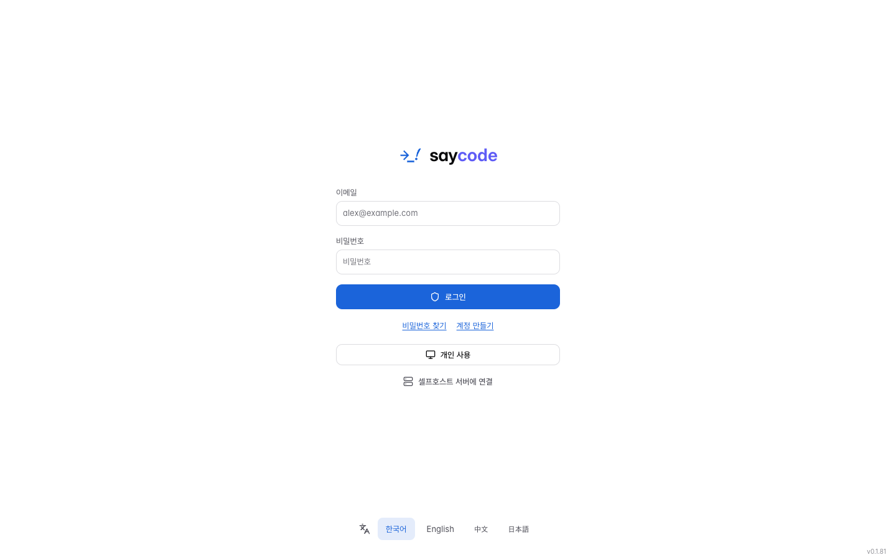
| 위치 | 이름 | 용도 |
|---|---|---|
| 위쪽 | 이메일 · 비밀번호 · 로그인 | Saycode 계정으로 로그인합니다. 조직(팀)을 쓴다면 이 방법입니다. |
| 로그인 아래 | 비밀번호 찾기 · 계정 만들기 | 앱 안에서 가입하거나 비밀번호를 다시 정합니다. |
| 가운데 | 개인 사용 | 계정 없이 내 PC에서 바로 시작합니다. |
| 맨 아래 | 셀프호스트 서버에 연결 | 직접 운영하는 Saycode 서버에 연결 코드로 접속합니다. |
| 화면 하단 | 한국어 / English / 中文 / 日本語 | 앱 언어. 누르면 바로 바뀌고, 나중에 내 설정 → 일반 → 언어에서도 바꿉니다. |
1.3 방법 ① 개인 사용 — 계정 없이 시작#
조건: 없음. 로그인하지 않은 첫 화면에서만 보입니다. 이 방식에서는 대화와 프로젝트가 이 PC에만 저장됩니다.
- 시작 화면에서 개인 사용을 누릅니다.
- "개인 사용 (내 PC 연결)" 창이 나오면 안내를 읽고 확인을 누릅니다. 취소하려면 취소를 누르세요.
- Saycode가 이 PC에서 작업공간을 준비합니다. 처음에는 10~30초쯤 걸릴 수 있습니다.
- 준비가 끝나면 "첫 작업까지 함께 준비해요" 창이 자동으로 열립니다 → 2장 시작준비로 이어집니다.
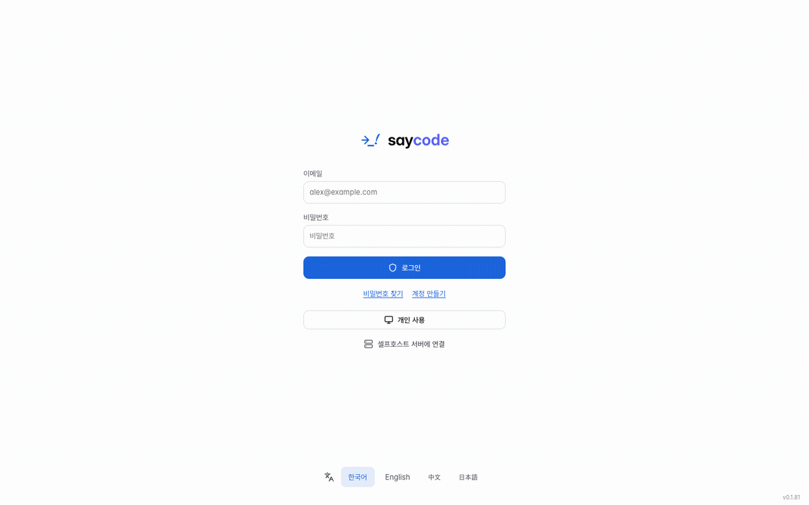
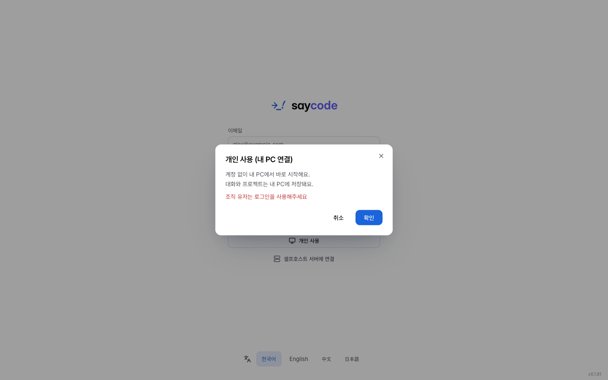
참고
창에 보이는 "조직 유저는 로그인을 사용해주세요"는 조직에 속한 분은 개인 사용이 아니라 로그인으로 들어와야 한다는 뜻입니다.
팁
나중에 계정이 생기면 사이드바 맨 아래 프로필 버튼 → 로그인으로 바꿔 팀 기능을 쓸 수 있습니다. 개인 사용에서 만든 로컬 프로젝트는 로그인 후에도 그대로 남습니다.
1.4 방법 ② 로그인 — 계정으로 시작#
조건: Saycode 계정이 필요합니다. 계정이 없다면 아래 순서로 앱 안에서 만듭니다.
계정 만들기를 누릅니다.
이메일을 입력해 인증 코드를 받습니다. 받은 편지함(스팸함 포함)에 6자리 인증코드가 오며, 이를 입력합니다(화면에 따라 "인증 코드"로 띄어 쓰기도 합니다).
비밀번호와 비밀번호 확인을 입력해 가입을 마칩니다.
가입한 계정으로 이메일·비밀번호를 입력하고 로그인을 누릅니다.
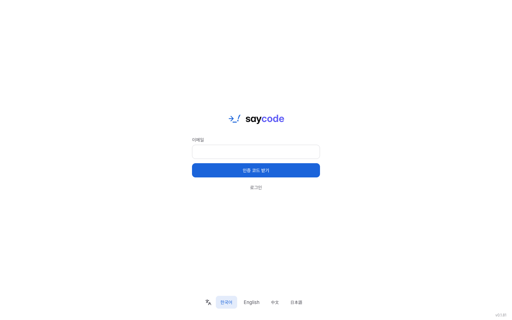
비밀번호를 잊었다면 비밀번호 찾기 → 이메일 입력 → 인증코드 보내기 → 6자리 코드 입력 → 새 비밀번호·비밀번호 확인 → 비밀번호 변경 → 로그인으로 돌아가기 순서입니다.
참고
비밀번호 재설정 코드는 10분 동안 유효하고 최대 5번까지 확인할 수 있습니다. 다시 보내기는 60초 뒤에 누를 수 있으며, 새 코드를 받으면 이전 코드는 쓸 수 없습니다. 변경 뒤에는 자동으로 로그인되지 않으니 다시 로그인하세요.
조직에서 시작하기 [조직]#
로그인 후 조직 계정이라면 "어느 조직에서 작업할까요?" 화면이 나옵니다.
- 목록에서 작업할 조직을 고릅니다. 소속된 조직이 없으면 작업공간 만들기로 직접 만들거나, 받은 초대를 수락하거나, 초대 코드로 참여에 코드를 넣고 조직에 참여를 누릅니다.
- 다음을 누르면 필요한 도구를 준비하고 이 컴퓨터를 조직의 작업PC로 등록한 뒤 AI 연결을 확인합니다.
- 준비가 끝나면 완료를 누릅니다.
팁
컴퓨터 준비가 막혔거나 지금 등록하고 싶지 않다면 이 PC 나중에 등록을 누르세요. 앱에는 바로 들어갈 수 있고, 등록은 나중에 내 설정 → 개발 → 작업PC → 내 컴퓨터 등록에서 할 수 있습니다. 조직에 다른 온라인 작업PC가 있다면 그 PC에서 대화할 수 있습니다.
1.5 방법 ③ 셀프호스트 서버에 연결#
조건: 직접 운영하는 Saycode 서버(saycode server로 띄운 서버)와 서버에서 만든 소유자 연결 코드가 필요합니다. 일반 사용자는 건너뛰어도 됩니다.
- 시작 화면에서 셀프호스트 서버에 연결을 누릅니다.
- 서버에서
saycode server connect로 발급한 연결 코드를 연결 코드 칸에 붙여넣습니다. - 연결을 누릅니다.
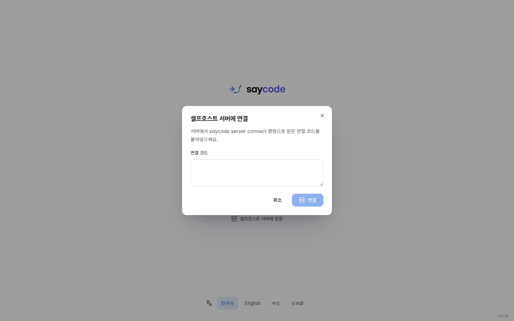
참고
회사가 따로 운영하는 서버에 연결하면 시작준비, 모바일 연결 같은 일부 설정 메뉴가 보이지 않고, 작업PC 등록은 "새 작업PC에서 로그인 명령을 실행해 나온 연결 코드를 서버에서 승인"하는 방식이 됩니다.
2. 시작준비#
AI가 일할 수 있도록 이 컴퓨터를 준비하고 AI 계정을 연결하는 첫 설정입니다. 개인 사용으로 처음 들어오면 "첫 작업까지 함께 준비해요" 창이 자동으로 열립니다.
참고
조건: 로그인한 계정은 처음에 이 창 대신 조직 시작 화면이 나옵니다. 회사가 따로 운영하는 서버에 연결했다면 시작준비 메뉴가 보이지 않습니다. 시작준비는 닫아도 언제든 다시 열 수 있습니다.
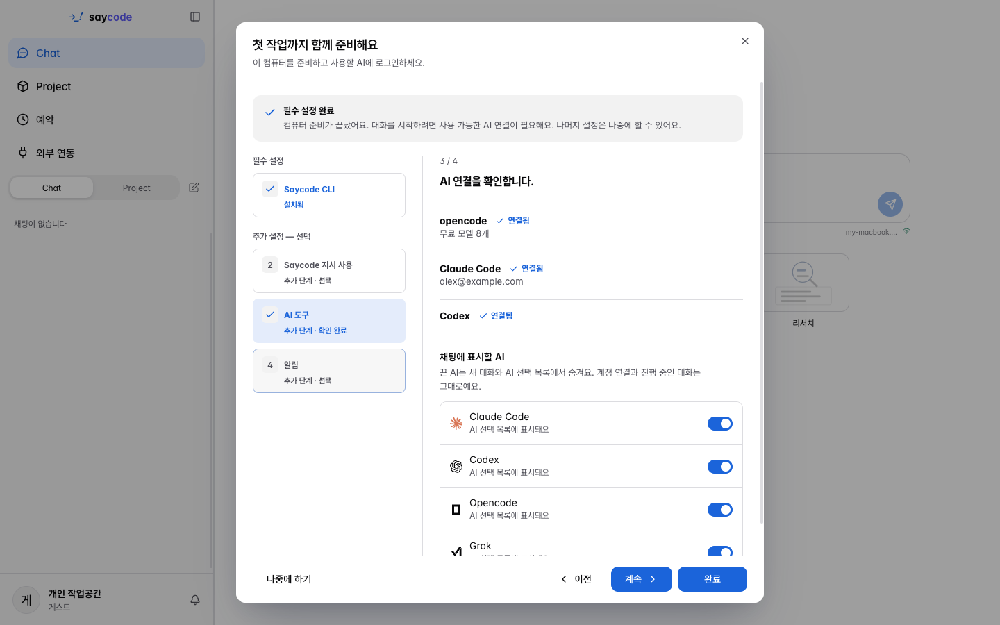
2.1 단계 구성#
왼쪽 목록은 필수 설정과 추가 설정 — 선택으로 나뉩니다. 필수 설정이 끝나면 "필수 설정 완료"가 표시되고, 나머지는 나중에 해도 됩니다. 다만 대화를 시작하려면 사용 가능한 AI 연결이 하나는 있어야 합니다. 단계 순서는 Saycode CLI → Saycode 지시 사용 → AI 도구 → 알림입니다.
| 구분 | 단계 | 하는 일 |
|---|---|---|
| 필수 | Saycode CLI | AI가 실제로 일하는 런타임을 준비합니다. 앱에 포함돼 있어 보통 곧바로 설치됨으로 표시되고, 터미널에서도 Saycode CLI 사용하기(업데이트 실행)와 추가 도구 설치 상태(다시 확인)가 함께 보입니다. 이 컴퓨터를 작업PC로 등록하는 과정도 여기에 포함됩니다. |
| 추가 | Saycode 지시 사용 | Saycode 기본 지시를 쓸지 정합니다. 나중에 내 설정 → 일반 → 시스템 프롬프트에서도 바꿀 수 있습니다(15장). |
| 추가 | AI 도구 | 이 컴퓨터에 연결된 AI(Claude Code, Codex, Opencode 등)를 확인합니다. |
| 추가 | 알림 | AI가 입력을 요청할 때와 작업을 마쳤을 때 소리로 알릴지 정하고 테스트 알림 보내기로 확인합니다. |
아래쪽 버튼은 이전 / 계속 / 완료, 그리고 왼쪽의 나중에 하기입니다. 마지막 알림 단계에는 첫 프로젝트 추가와 완료가 나란히 있으며, 완료를 누르면 닫힙니다. 이 단계부터 자동 진행 버튼은 설치할 도구가 남아 있을 때 나타나며, 필요한 도구를 내려받아 설치합니다.
2.2 AI 연결하기#
AI 도구 단계는 열 때 연결 정보를 한 번 확인하고(연결 정보를 확인 중입니다.) 연결된 AI만 보여 줍니다. 이 컴퓨터에 이미 로그인된 Claude·ChatGPT는 따로 등록하지 않아도 연결됨으로 표시되고 그대로 사용됩니다.
연결된 AI가 없으면 내 AI 계정을 연결해 주세요. 안내와 함께 아래 버튼이 나옵니다. (이미 연결돼 있다면 이 안내 대신 연결된 AI 목록이 보입니다.)
- 내 AI 계정 연결하기를 누르고 ChatGPT 또는 Claude를 고릅니다(같은 창의 무료 모델 (opencode)은 아래 무료 모델 절차와 같습니다).
- 브라우저가 열리면 로그인합니다. 안내에 따라 링크 버튼을 누르고 인증 코드를 입력합니다.
- 돌아오면 연결 상태가 한 번 더 확인되어 연결됨으로 바뀝니다.
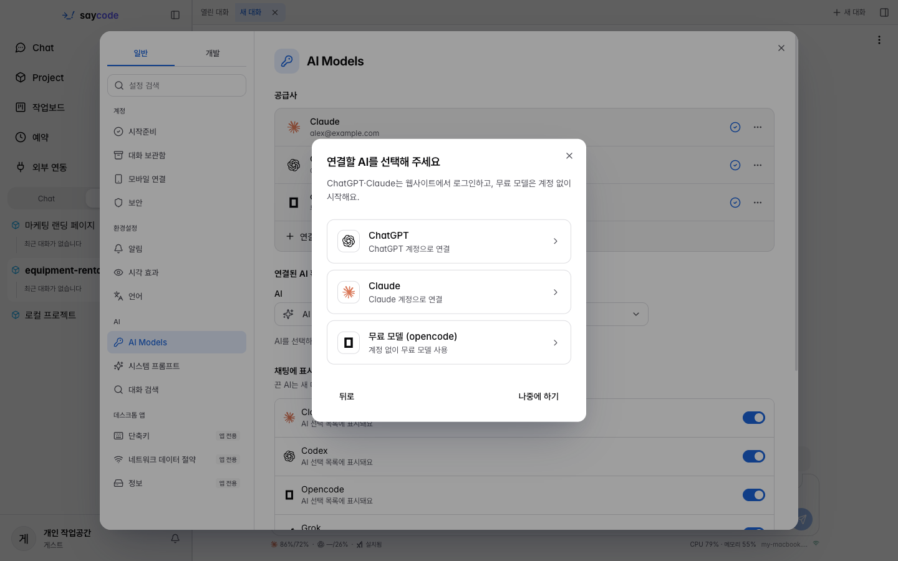
이 선택 창은 내 설정 → 일반 → AI Models → 연결하기에서도 같은 모양으로 열립니다.
유료 AI 계정이 없다면 무료 모델로 시작하기를 쓰세요. 유료 계정 없이도 바로 대화를 시작할 수 있는 길입니다. (자세한 내용은 7.5에 있습니다.)
- 무료 모델로 시작하기를 누릅니다.
- 확인 화면에서 설치 위치와 조건(기간 한정 제공, 모델마다 다른 보관·학습 정책, 유료 모델보다 낮을 수 있는 성능)을 읽습니다.
- 설치하고 시작하기를 누릅니다. 이미 opencode가 설치되어 있으면 "이미 설치된 opencode를 사용해요"가 나오고 버튼은 확인하고 시작하기입니다.
- "무료 모델로 시작할 준비가 됐어요"가 나오면 새 대화의 AI도구에서 Opencode를 고르면 됩니다. 모델을 따로 고르지 않으면 메시지마다 추천 무료 모델이 자동으로 선택됩니다.
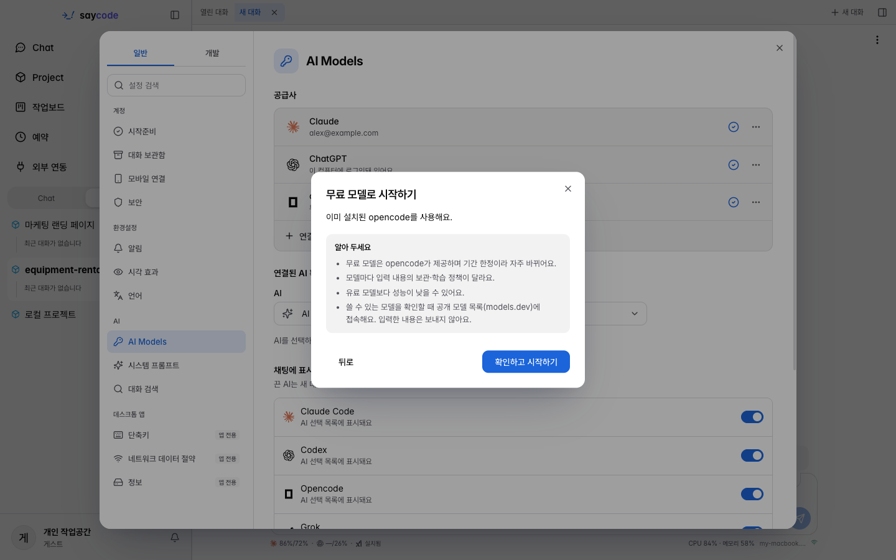
중요
무료 모델의 조건: 이 컴퓨터가 내 작업PC이고 온라인일 때만 설치할 수 있습니다. 조직이 쓸 AI를 제한했다면 설치가 막히고, Windows 시험판에서는 보이지 않습니다. 무료 모델 한도에 걸리면 다른 무료 모델로 최대 3번까지 자동 전환되며 유료 모델로는 절대 넘어가지 않습니다.
주의
회사·고객 코드나 기밀 자료는 주의하세요. 무료 모델은 모델마다 입력(프롬프트·코드)의 보관·학습 정책이 다릅니다. 일부 모델은 무료 기간에 입력을 모델 개선에 쓸 수 있다고 밝히고 있습니다. 기밀 자료에는 제공사가 보관하지 않고 학습에도 쓰지 않는다고 밝힌 무료 모델만 쓰거나, 유료·조직 AI를 연결하세요(7.5).
같은 단계의 채팅에 표시할 AI 스위치로는 쓰지 않는 AI를 선택 목록에서 숨깁니다(최소 하나는 남습니다). 조직 계정이라면 AI 단계에 조직 계정 연결하기, 암호화키 확인, 메시지 테스트 버튼이 보이며 관리자와 함께 확인하세요.
2.3 나중에 다시 열기#
- 사이드바 맨 아래 프로필 버튼을 누릅니다.
- 내 설정 → 일반 → 시작준비를 엽니다.
- 설치할 도구가 남아 있으면 이 단계부터 자동 진행을 누릅니다. 모두 설치됐다면(추가 도구 7/7 설치됨) 상태만 확인하고 완료로 닫습니다.
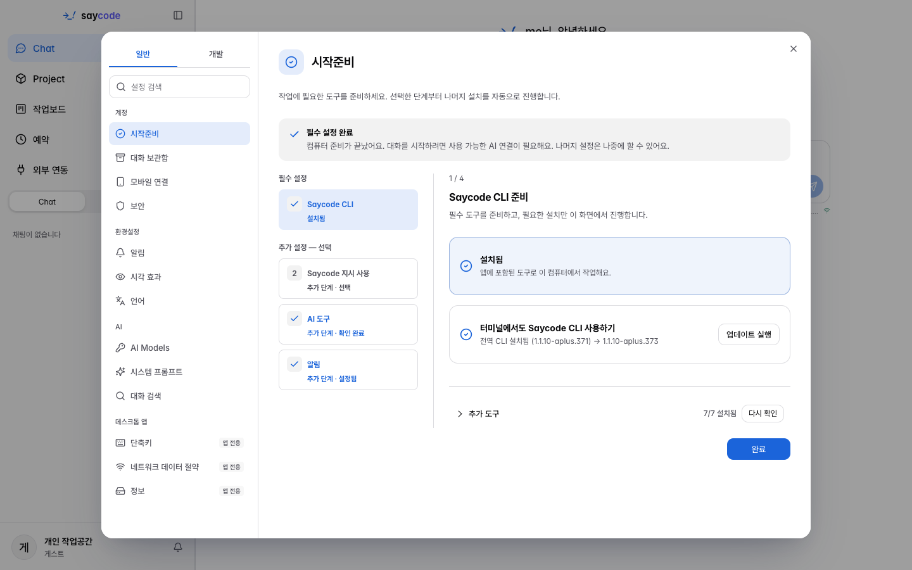
팁
Windows에서는 Node.js·uv·Git을 자동으로 설치해 줍니다. 자동 설치가 어렵다면 직접 설치할게요를 고르세요. 오류가 나면 오류 상세 → 다음 조치 → 설치 안내를 누르고, 진단 로그가 필요하면 로그 복사로 복사해 관리자나 지원 담당자에게 전달하세요.
팁
AI 계정은 나중에 내 설정 → 일반 → AI Models에서 연결하기, 행의 … 메뉴 → 연결 해제 / Saycode에 다시 연결 / 계정 추가로 관리합니다. 무료 모델은 Opencode 행 … → 설치하기입니다(7.5).
3. 화면 둘러보기#
Saycode는 왼쪽 사이드바에서 시작하고, 설정은 왼쪽 아래 프로필 버튼에서 엽니다. 이 장에서는 화면의 큰 길잡이 세 가지를 익힙니다.
3.1 사이드바#
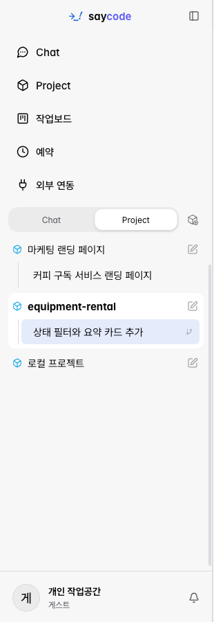
위에서 아래로 다음과 같이 구성됩니다.
| 영역 | 내용 |
|---|---|
| Chat | 프로젝트 없이 대화하는 시작 화면(어떤 작업을 도와드릴까요?) → 4장 |
| Project | 프로젝트 홈. 안에 Build(말로 기획 시작)와 Develop(저장소·폴더로 시작) 모드가 있습니다 → 5장 |
| 작업보드 | 모든 대화를 칸반으로 보는 화면. [개발자] 기본은 숨김 → 12장 |
| 예약 | 정해진 시간마다 AI에게 일을 맡기는 화면 → 13장 |
| 외부 연동 | 서비스 연결, 확장 설치 → 16장 |
| Chat / Project 탭 | 아래 목록을 내 채팅 목록과 프로젝트 목록 사이에서 전환합니다. 탭을 바꿔도 가운데 화면은 그대로입니다. 탭 오른쪽 버튼은 Project에서는 새 프로젝트(큐브+), Chat에서는 새 대화(연필)입니다. |
| 프로젝트·대화 목록 | 프로젝트를 누르면 대화 목록이 펼쳐집니다. 프로젝트 목록은 30개씩, 프로젝트당 대화는 10개씩 보이고 더보기로 더 불러옵니다. 대화 줄에는 작업트리 아이콘, PR 번호, 주황색 질문 아이콘(답을 기다리는 중), 응답 중 아이콘이 표시됩니다. |
| 맨 아래 프로필 버튼 | 이름을 누르면 프로필 메뉴가 열립니다. 개인 사용에서는 "개인 작업공간 · 게스트"로 표시됩니다. |
| 종 아이콘 | 최근 알림. 누르면 알림 영역이 켜지고, 알림을 누르면 해당 대화로 이동하며 전체보기로 알림 센터(미확인 / 확인함 탭)를 엽니다. |
목록 검색: 목록 맨 위에서 위로 스크롤하면 검색창이 나타납니다(⌘K). Project 목록에서는 검색창 오른쪽 점 세 개 버튼으로 전체 / 내 프로젝트 / 함께 작업 / 공유받은 프로젝트 보기 범위를 고를 수 있습니다.
사이드바 접기·너비: ⌘B로 접고 펼칩니다. 접으면 왼쪽에 펼치기 / Chat / Project / 예약 / 톱니바퀴(내 설정) 아이콘만 남습니다. 펼친 상태에서는 오른쪽 경계를 끌어 너비를 바꿉니다.
팁
프로젝트 줄에 마우스를 올리면 점 세 개(⋮) 메뉴에서 고정, 프로젝트 설정, 모든 대화를 고릅니다. 대화 줄의 메뉴는 10장에서 설명합니다.
3.2 프로필 메뉴#
사이드바 맨 아래 프로필 버튼을 누르면 열립니다.
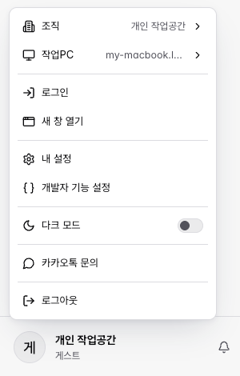
| 항목 | 설명 |
|---|---|
| 조직 | 작업할 조직을 바꿉니다. 개인 사용에서는 "개인 작업공간"으로 표시되고, 여러 조직에 속한 계정이라면 목록에서 고릅니다. |
| 작업PC | 새 작업을 실행할 기본 작업PC를 고릅니다. 내가 등록한 작업PC와 공용 PC로 나뉘며, 켜져 있는 PC만 보입니다. |
| 로그인 / 로그아웃 | 개인 사용 중에는 로그인으로 계정에 로그인하고, 로그인 중에는 로그아웃(확인 창에서 한 번 더 누름)을 씁니다. |
| 새 창 열기 | 앱 창을 하나 더 엽니다(⌘N). |
| 내 설정 | 모든 설정(⌘,). 3.3에서 설명합니다. |
| 개발자 기능 설정 | 숨겨진 기능을 켜는 스위치 모음 → 3.4 |
| 다크 모드 | 어두운 테마를 켜고 끄는 스위치입니다. 메뉴가 열린 채로 남아 바로 바꿔 볼 수 있습니다. |
| 카카오톡 문의 (로그인하면 사용 문의) | 로그인하면 사용 문의(화면 이미지 3장까지 첨부 가능), 개인 사용 중에는 카카오톡 문의로 오픈채팅방이 열립니다. |
| 조직 관리 [조직] | 조직 소유자·관리자에게만 보입니다(보이는 경우 메뉴 맨 위). 비밀번호로 한 번 더 인증한 뒤 관리 창을 엽니다 → 18장 |
| 업데이트 확인 | 정식 설치본에서 보입니다. 업데이트 내려받기 → 재시작해서 업데이트 순서로 새 버전을 설치합니다. |
3.3 내 설정의 일반과 개발#
프로필 메뉴 → 내 설정(⌘,)을 열면 왼쪽 위에서 일반과 개발 두 영역을 오갑니다. 일반의 왼쪽 메뉴는 계정 / 환경설정 / AI / 데스크톱 앱 묶음으로 나뉩니다. 왼쪽 위 설정 검색에 다크, 알림음, 예약, 자동 작업처럼 찾는 기능을 입력하면 해당 메뉴만 추려 줍니다(옛 이름으로도 검색됩니다. 예: 머신 → 작업PC). 검색 결과 메뉴를 눌러야 오른쪽 본문이 바뀝니다.
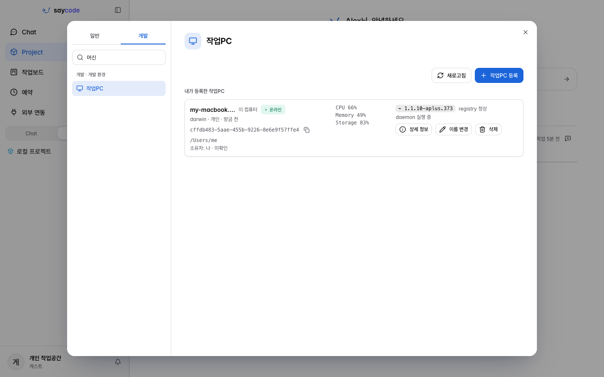
메뉴 전체 지도는 부록 B.1·B.2에 있습니다.
참고
[로그인] 표시가 있는 메뉴는 개인 사용에서는 보이지 않습니다. 또한 조직 관리자가 끈 설정은 잠기고 "조직 정책으로 정해진 설정"이라는 안내가 붙습니다.
3.4 개발자 기능 설정#
프로필 메뉴 → 개발자 기능 설정을 누르면 내 설정의 개발 탭에서 아래 스위치가 열립니다. 기본은 모두 꺼져 있습니다.
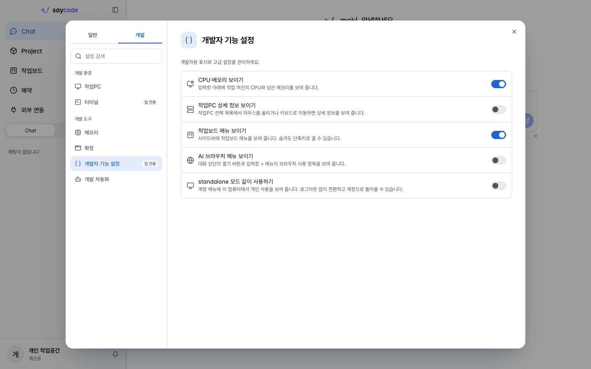
| 스위치 | 켜면 |
|---|---|
| CPU·메모리 보이기 | 입력창 아래에 작업PC의 CPU·메모리 표시. 누르면 디스크·부하 등 상세 |
| 작업PC 상세 정보 보이기 | 작업PC 화면에 상세 정보 |
| 작업보드 메뉴 보이기 | 사이드바에 작업보드 메뉴 (12장) |
| AI 브라우저 메뉴 보이기 | AI가 쓰는 브라우저 관련 메뉴(입력창 + → 이번 요청에 브라우저 사용) |
| standalone 모드 같이 사용하기 | 로그인 계정을 쓰면서 이 컴퓨터의 개인 사용도 병행. 켠 뒤 프로필 메뉴에 이 컴퓨터에서 개인 사용, 돌아올 때 계정으로 돌아가기가 생깁니다. |
| 조직 검색 설정 [조직] | 조직 소유자·관리자가 조직 전체 대화 검색 서버를 연결 |
4. Chat으로 프로젝트 없이 일하기#
프로젝트를 만들지 않고 바로 질문하고, 문서·표·발표자료를 만드는 곳입니다. 개인 사용에서도 대화가 저장되고 이어집니다.
참고
조건: 대화를 시작하려면 온라인 작업PC와 연결된 AI가 하나씩 필요합니다. 없으면 입력창 아래에 "작업PC 설정 열기" 또는 파란 내 AI 연결 안내가 나옵니다(2장). 준비되기 전에는 입력창이 비활성으로 보이지만 쓰던 글은 보존됩니다.
4.1 첫 질문 보내기#
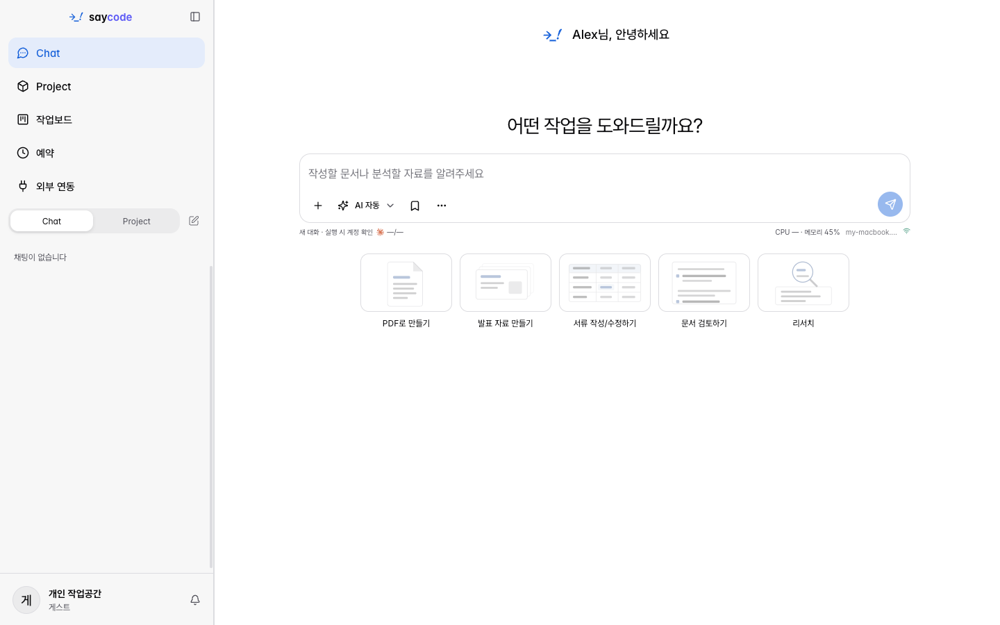
- 사이드바에서 Chat을 누릅니다.
- 가운데 입력창(
어떤 작업을 도와드릴까요?)에 요청을 적습니다. - 입력창 오른쪽의 전송 버튼(종이비행기)이나 Enter로 보냅니다.
- 대화가 열리면 사이드바 Chat 탭의 목록에 쌓이고, 같은 화면에서 이어서 물어볼 수 있습니다.
입력창 아래 오른쪽의 작업PC 이름을 누르면 이 Chat을 실행할 작업PC를 바꿀 수 있습니다(온라인인 PC만 보입니다). 새 대화 이후에는 바꿀 수 없습니다.
팁
입력창 아래의 시작 예시 카드(PDF로 만들기 · 발표 자료 만들기 · 서류 작성/수정하기 · 문서 검토하기 · 리서치)를 누르면 예시 요청이 채워집니다. 내 파일 올리기로 내 자료를 올려 시작할 수도 있습니다.
4.2 문서 형식과 템플릿#
DOCX·XLSX·PPTX·PDF 같은 Office 문서를 만들 때는 형식과 양식을 먼저 고르면 결과가 훨씬 안정적입니다.
- 새 Chat 입력창 왼쪽 +(추가)를 누릅니다.
- 메뉴에서 만들 문서 형식을 고릅니다 — 문서(DOCX) / 스프레드시트(XLSX) / 프레젠테이션(PPTX) / PDF 문서(PDF). 같은 메뉴에는 파일 또는 사진 추가(⌘U), 폴더 추가, 기존 경로에서 시작(이 컴퓨터의 기존 폴더를 작업 경로로 사용)도 있습니다.
- 입력창 위에 템플릿 갤러리가 열립니다. 기본 양식(Design Report, Minimal Letterhead)이나 내가 저장한 개인 양식을 고릅니다. 고른 형식은 입력창 위의 칩에 표시되며 칩의 ✕로 해제합니다.
- 양식을 따로 저장하고 싶다면 내 템플릿 만들기로 Office 파일과 작성 지침을 등록합니다.
- 입력창에 만들 내용을 적고 보냅니다. 예: "3분기 장비 대여 현황 보고서를 만들어줘."
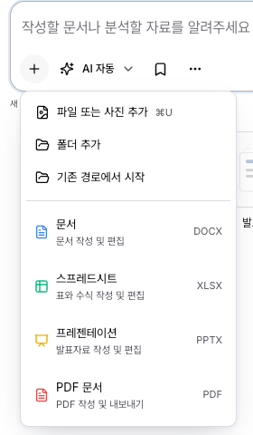
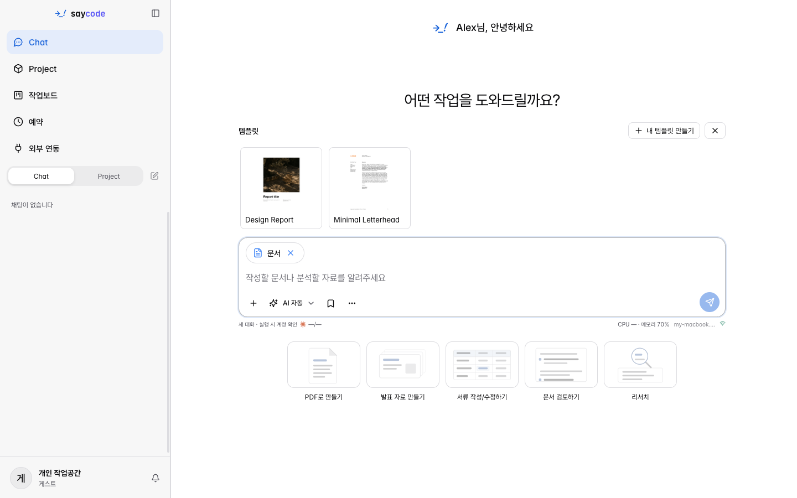
참고
기본 양식은 확장 설치 없이 쓸 수 있습니다. 개인 템플릿 원본은 허용된 개인 작업PC에서만 사용할 수 있습니다.
4.3 결과 파일 보기·저장·공유#
AI가 만든 파일은 답변 안에 파일 카드로 나타납니다.
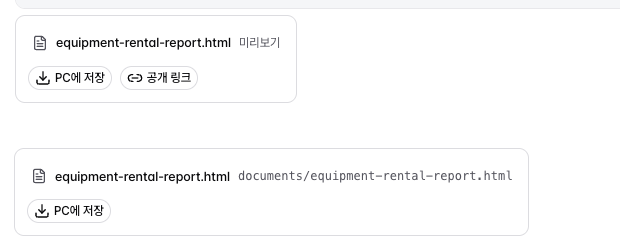
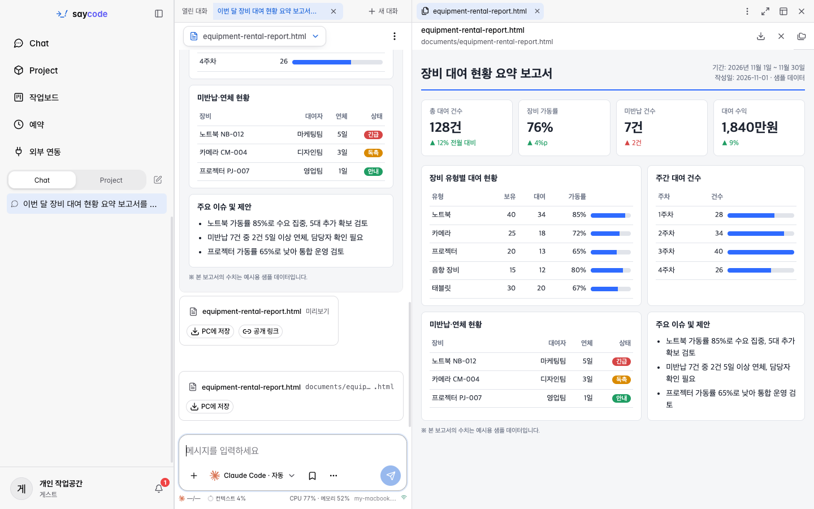
- 답변 속 파일 이름을 누르면 오른쪽 작업 도구 패널에서 문서가 열립니다(DOCX·PDF·HTML·마크다운·이미지 지원). HTML 결과는 채팅 안에서 인라인 미리보기가 나오고, 완료 직후 오른쪽 패널에 자동으로 열리기도 합니다.
- 파일 카드의 PC에 저장을 누르면 내 컴퓨터의 원하는 위치에 저장합니다.
- 공개 링크 — 개인 사용에서도 HTML 결과 카드에 버튼이 보이지만, 링크를 만들어 공개하려면 [로그인] 계정이 필요합니다. PC에 저장 옆의 공개 링크 버튼을 누르면 공개 창이 열립니다.
- 처음 누르면 설치 진행이 나옵니다. 한 번 누르면 공개 링크 기능이 설치·활성화되고 링크 만들기까지 이어집니다.
- 공개 범위를 고릅니다. 기본은 링크가 있는 누구나, 조직만을 고르면 조직 구성원이 로그인해야 열립니다.
- 만료를 1일·3일·7일·30일 중에서 고릅니다.
- 링크 복사로 주소를 복사합니다. 공개를 멈추려면 같은 창에서 공개를 중지합니다.
중요
공개 링크 만들기는 로그인한 계정에서 동작합니다. 개인 사용에서는 PC에 저장과 앱 안 열람을 쓰세요. AI가 답변 중일 때는 공개 링크를 누를 수 없습니다.
4.4 Chat에서 쓸 수 있는 입력 기능#
Chat 입력창에서도 프로젝트 대화와 같은 기능 대부분을 쓸 수 있습니다. 자세한 사용법은 6장을 참고하세요.
- +: 파일 또는 사진 추가(⌘U), 폴더 추가, 기존 경로에서 시작(이 컴퓨터의 기존 폴더를 작업 경로로 사용)
- AI가 답하는 동안 다음 요청을 대기열에 넣을 수 있고, AI의 질문은 질문 폼으로 답합니다.
/btw(곁질문),/recap(요약),/usage(AI 사용량), 코드 상자·표·[!NOTE]강조 상자 렌더링, 긴 붙여넣기 카드- [로그인] "매일 오전 9시에 요약해줘"처럼 말로 예약을 만들 수 있습니다(13장).
팁
사용법이 궁금할 때는 Chat에서 *"다크 모드는 어디서 켜?"*처럼 물어보세요. Saycode AI가 앱 안내로 답하고 해당 설정 화면을 바로 열어 줍니다. 이 기능은 내 설정 → 일반 → 시스템 프롬프트의 Saycode 사용 안내 스위치로 끌 수 있습니다.
5. 프로젝트 만들기#
내 폴더나 저장소를 프로젝트로 연결해 두면, 그 안에서 여러 대화로 코드를 만들고 고칠 수 있습니다. 한 창에서 네 가지 방법을 고릅니다.
참고
조건: 프로젝트를 만들 온라인 작업PC가 필요합니다. Git 저장소 탭은 [로그인] GitHub 또는 GitLab 연결이 필요하며(내 설정 → 개발 → 저장소), 나머지 방식은 계정 없이도 됩니다.
5.1 Project 메뉴: Build와 Develop#
사이드바 Project를 누르면 두 가지 시작 모드가 있습니다.
| 모드 | 이런 때 |
|---|---|
| Build | 만들고 싶은 것을 말로 설명해 기획부터 시작합니다. 입력창(만들고싶은 내용을 입력해주세요)에 적어 보내면 됩니다. 아래에는 최근 프로젝트 카드가 나옵니다. |
| Develop | 코드 저장소나 폴더로 개발을 시작하는 개발자용입니다. 프로젝트 만들기 · 코드 저장소 가져오기 · Zip/파일 가져오기 · 머신 폴더 사용하기 카드와 프로젝트 목록이 있습니다. |
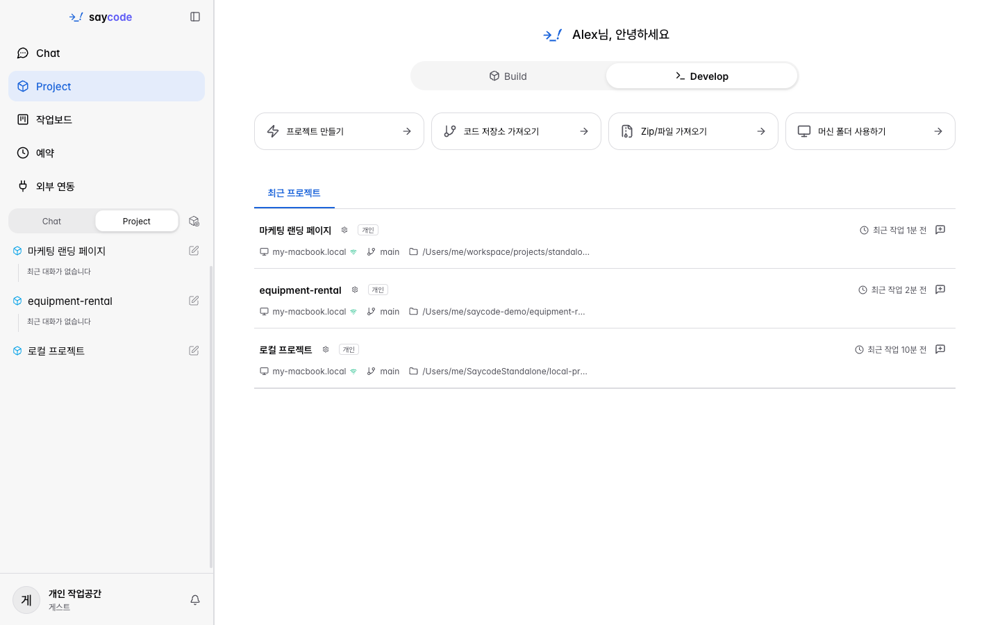
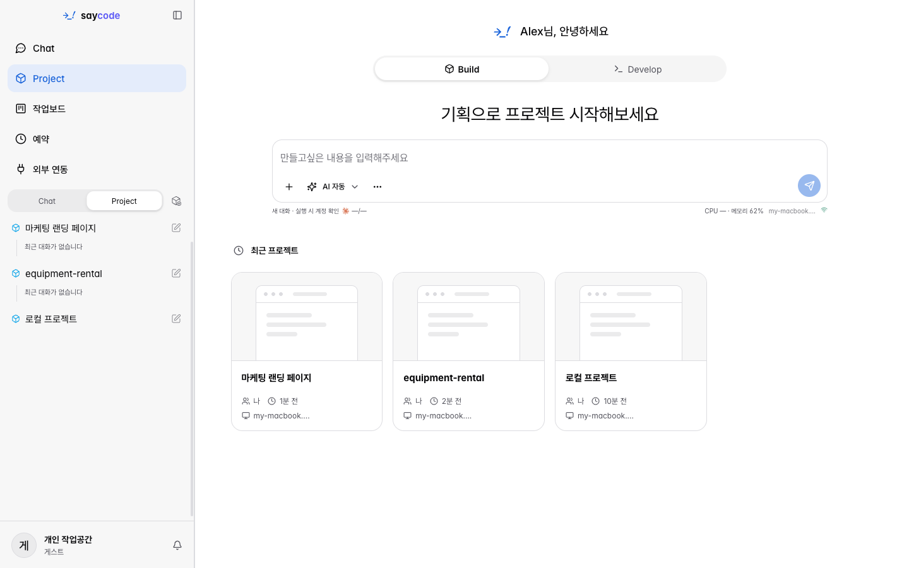
두 모드 모두 입력창 아래 오른쪽의 작업PC 이름을 눌러 어느 PC에서 시작할지 고를 수 있습니다.
5.2 프로젝트 만들기 창#
사이드바 Project → Develop → 프로젝트 만들기를 누르면 제목이 새 프로젝트인 창이 열립니다(이 가이드에서는 "프로젝트 만들기 창"이라고 부릅니다). (사이드바 목록 탭 오른쪽의 큐브+ 버튼이나, Develop의 코드 저장소 가져오기 / Zip/파일 가져오기 / 머신 폴더 사용하기 카드로 해당 방식을 바로 열 수도 있습니다.)
창 위쪽의 탭에서 방식을 고릅니다. 탭을 바꿔도 입력한 내용은 유지됩니다.
탭 설명 새 프로젝트 이름만 정하면 빈 폴더에서 시작합니다. Git 저장소 원격 저장소 주소로 작업PC에 복제합니다. ZIP·파일 압축 파일이나 파일에서 프로젝트를 만듭니다. 기존 폴더 이미 있는 코드베이스를 그대로 연결합니다. 기존 폴더에서는 선택한 작업PC의 사용자 홈부터 폴더를 탐색합니다. 숨김 폴더(
.으로 시작)가 먼저 나열되므로, 경로를 직접 입력하고 Enter로 확인하는 편이 빠릅니다. 내 컴퓨터라면 새로운 경로에서 시작으로 운영체제 폴더 선택 창을 열 수 있습니다.창 맨 아래 왼쪽의 작업PC: 이름을 누르면 작업PC 선택 창이 열려 프로젝트가 만들어질 PC를 바꿀 수 있습니다(온라인 PC만 표시, Esc로 닫으면 선택은 그대로).
이름을 확인하고 프로젝트 만들기(가져오는 방식에서는 프로젝트 가져오기)를 누릅니다.
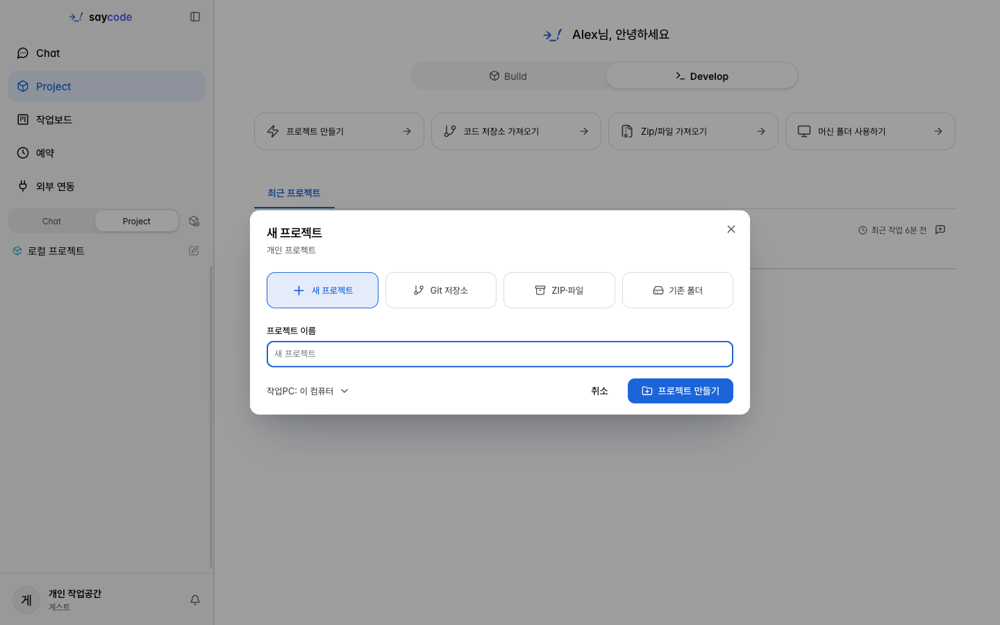
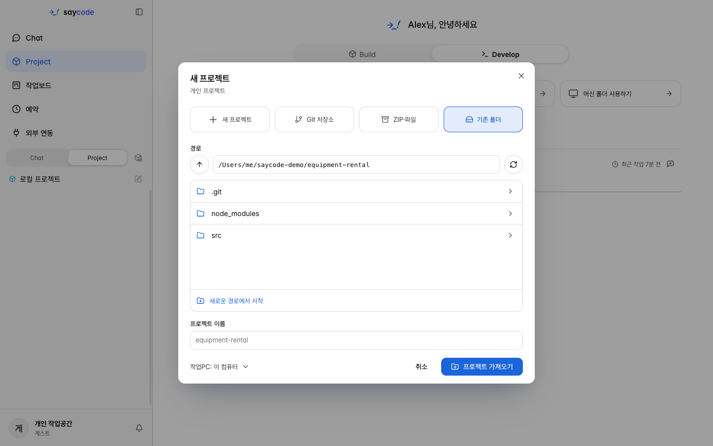
팁
새 프로젝트는 만든 뒤 Develop 목록에서 폴더 위치를 확인할 수 있습니다. 처음이라면 기존 폴더로 내가 쓰던 코드 폴더를 열거나, 새 프로젝트로 빈 폴더에서 시작해 보세요. Git 저장소 프로젝트여야 작업트리, 브랜치, PR 올리기가 모두 동작합니다.
5.3 프로젝트 설정#
프로젝트를 연 상태에서 대화 위 프로젝트 이름 옆 설정 버튼(또는 사이드바 프로젝트 ⋮ → 프로젝트 설정)으로 엽니다. 일반과 개발 두 묶음으로 나뉩니다.
| 묶음 | 항목 |
|---|---|
| 일반 | 프로젝트 정보(이름·설명·썸네일·태그·시작 패널), 데스크탑 설정, 코드 저장소, 작업PC |
| 개발 | 실행(개발 서버 명령·포트 → 실행 설정 저장), 환경변수, 개발 정보, 프로젝트 삭제 |
로그인한 조직 프로젝트에는 함께 작업, 프로젝트 공유, MCP 서버 같은 항목이 더 있습니다(18장).
참고
값을 바꾸려면 프로젝트 소유자여야 하는 항목이 많습니다. 프로젝트 이름 옆 태그로 분류하고 사이드바에서 태그로 걸러 볼 수도 있습니다.
6. 프로젝트 대화와 입력창#
프로젝트를 열고 대화를 시작하면, 가운데는 대화, 오른쪽은 작업 영역으로 나뉩니다. 이 장은 대화를 시작하고 입력창을 다루는 법을 설명합니다.
참고
조건: 온라인 작업PC와 연결된 AI(또는 무료 모델)가 있어야 합니다.
6.1 첫 대화 — 한 문장으로 앱 만들기#
사이드바에서 프로젝트 이름 옆 연필 아이콘(새 대화) 을 누르거나, 프로젝트를 연 뒤 화면 맨 위 오른쪽의 + 새 대화를 누릅니다. 새 대화 화면에 *"어떤 작업을 도와드릴까요?"*와 입력창(
메시지를 입력하세요)이 나옵니다.입력창에 요청을 적습니다.
"사내 장비 대여 현황 대시보드를 만들어줘. Vite + React로 상태별 요약 카드, 검색·상태 필터, 대여 목록 표(더미 데이터 20건)를 넣고 라이트 테마로. 개발 서버를 5173 포트로 켜두고 미리보기로 볼 수 있게 해줘."
전송 버튼(원형)이나 Enter로 보냅니다.
AI가 파일을 만들고
npm install·빌드·개발 서버 실행을 진행합니다. 도구 호출은 한 줄 행으로 접혀 보이고, 길게 생각한 내용(Thinking)은 기본으로 접혀 있습니다. 5줄이 넘는 코드는 펼치기 (코드 N줄) 로 펼칩니다.개발 서버가 뜨면 오른쪽 작업 영역에 브라우저·미리보기 탭이 열리는 경우가 많습니다. 열리지 않으면 8.5를 보세요.
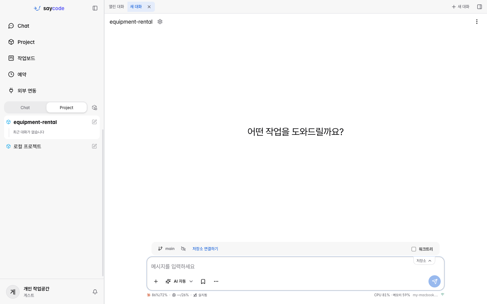
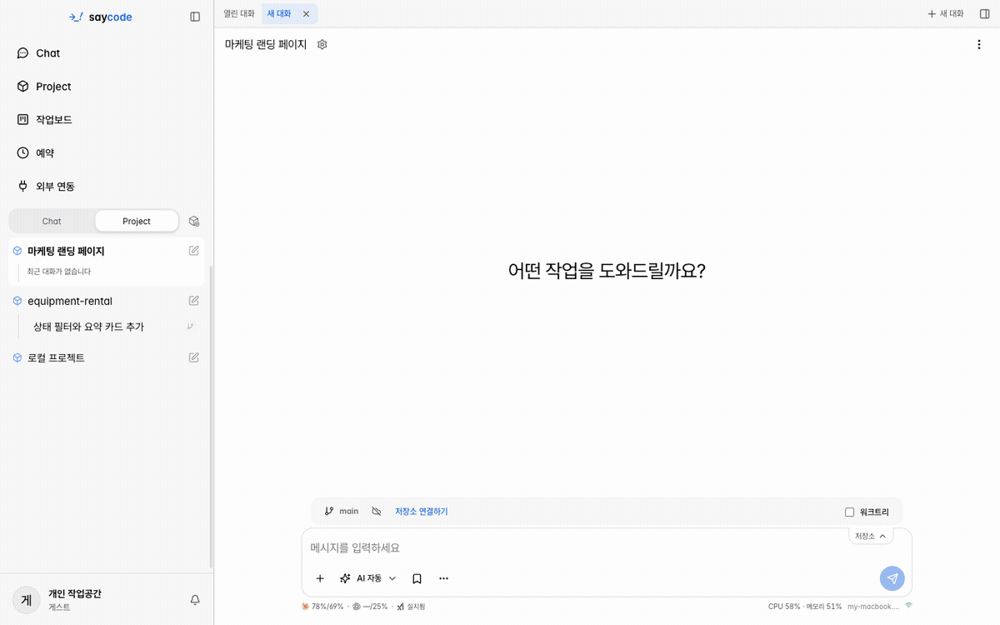
팁
개발 서버가 필요하다면 요청에 *"개발 서버를 켜두고 미리보기로 볼 수 있게"*를 꼭 넣으세요. 그렇지 않으면 AI가 HTML 파일 하나로 끝낼 수 있습니다.
6.2 화면 구성#
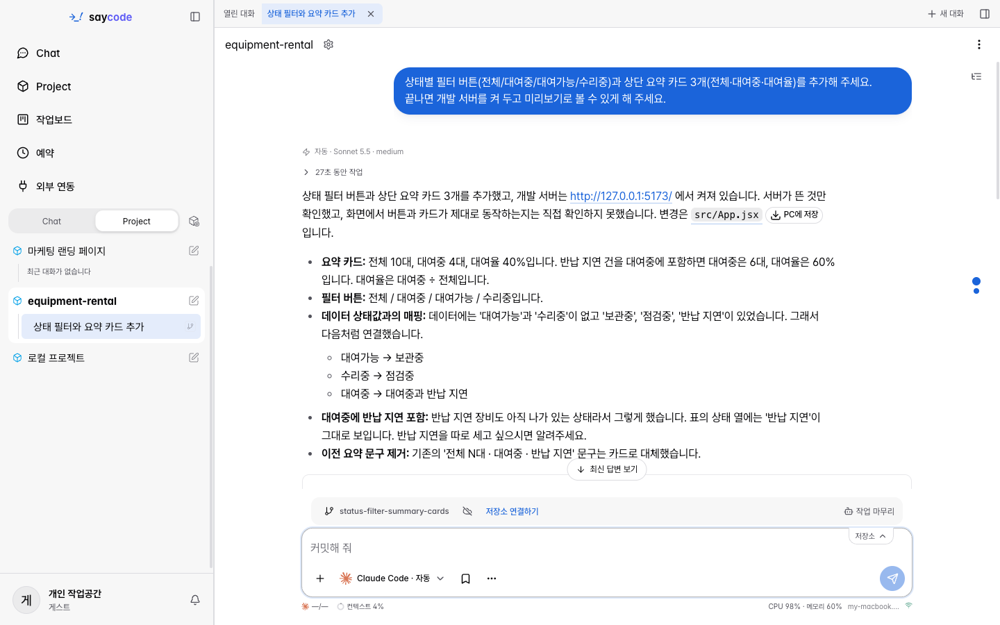
- 열린 대화 탭 줄: 위쪽의 열린 대화 영역에 대화가 탭으로 열립니다. + 새 대화(⌘T)로 같은 프로젝트에서 새 대화를 열고, 앱을 다시 켜도 프로젝트별로 복원됩니다.
- 헤더: 프로젝트 이름, 설정 아이콘, 오른쪽 프로젝트 도구(⋮)
- 오른쪽 가장자리: 메시지 이동 레일(점)과 대화 요약 버튼(10장)
- 입력창: 위 줄(저장소·브랜치·목표·작업 마무리)과 아래 줄(AI·모델·AI 잔여량)이 있습니다.
프로젝트 도구(⋮) 는 위쪽에 작업 패널(파일 · 터미널 · 브라우저 · 변경 · 미리보기, 8장), 가운데에 이 대화의 기능(검색, 고정, 알림 소리 끄기, 대화 이어가기, 예약 작업, 자식 AI도구 N개), 아래에 프로젝트 기능(Git 작업, 자동화(GitHub 트리거·스크립트 자동화), 에디터로 열기…, 프로젝트 공유)이 모여 있습니다.
6.3 입력창에서 먼저 알아 둘 것#
입력창은 위 줄(저장소·브랜치)과 아래 줄(AI·사용량)로 나뉩니다. 처음에는 다음 네 가지만 알면 됩니다.
- AI 자동(아래 줄 왼쪽 버튼): AI·모델·작업 강도를 한 버튼에서 고릅니다. 새 대화의 기본은 AI 자동이며, 보낸 뒤에는
Claude Code · 자동처럼 고른 AI와 모델이 표시됩니다 → 7장 - AI 잔여량(아래 줄, 예:
86%/72%): 누르면 계정별 남은 사용량 창이 열립니다 → 7.4. 옆의컨텍스트 N%는 Claude 대화가 컨텍스트 창을 채운 정도이며 80% 이상이면 새 대화나/compact를 권합니다. - 워크트리 체크박스(위 줄 오른쪽): 켜면 이 대화만의 작업트리(복사본 작업 폴더)에서 일합니다. Git 저장소 프로젝트의 아직 보내지 않은 새 대화에서만 설정할 수 있으니, 보내기 전에 체크 상태를 한 번 확인하세요(이전 대화의 선택이 남아 있을 수 있습니다).
- 작업 마무리(위 줄 오른쪽 끝, 대화를 시작한 뒤 나타남): 리뷰·PR·보관을 한 메뉴에서 → 11장
저장소 줄, 브랜치·PR 칩, 목표, + 와 ⋯ 메뉴의 항목은 부록 B.3·B.4에 정리했습니다.
6.4 입력창 메뉴와 특수 입력#
+(파일·사진·폴더 첨부, ⌘U)와 ⋯(프롬프트 검색, 파일 복원지점, 동시작업 등) 메뉴의 항목은 부록 B.4에 있습니다. 입력창에서는 다음 입력도 쓸 수 있습니다.
@+ 파일 이름 → 프로젝트 파일을 요청에 넣습니다.@+ 대화 제목 → 대화 묶음에서 같은 프로젝트의 다른 대화를 칩으로 붙여, AI가 그 대화를 읽고 답하게 합니다. 보관된 대화는 흐리게 표시됩니다./→ 명령 목록(위·아래 + Enter/Tab). 목록은 대화 AI에 맞춰 달라집니다./btw 질문(곁질문): 진행 중인 작업을 멈추지 않고 지금 대화를 바탕으로 짧게 답한 카드가 입력창 위에 뜨며 기록에는 남지 않습니다. 이미 시작한 Claude 대화에서만 됩니다./recap: "지금까지"와 "다음 행동"을 요약한 카드를 보여 줍니다. 내 메시지가 3개 이상인 Claude 대화에서만 됩니다. 뒤에 다른 글을 붙이면 일반 메시지로 보내집니다.- 긴 텍스트를 붙여넣으면
붙여넣은 텍스트 · N줄카드가 되고, 답변 속 글을 선택하거나 우클릭하면 인용할 수 있습니다.
6.5 내 프롬프트 — 자주 쓰는 요청 저장#
- 입력창에 자주 쓰는 문장을 적습니다.
- 입력창의 책갈피 아이콘(내 프롬프트)을 누릅니다.
- 입력 저장을 누르면 저장됩니다.
- 다음부터는 같은 책갈피 메뉴에서 문장을 눌러 입력창에 바로 넣습니다.
참고
[로그인] 로그인 계정에 저장되어 다른 PC에서도 같은 목록이 보이고, 한 문장은 10,000자까지입니다. 저장한 문장은 모든 프로젝트에서 보입니다. 입력창이 비어 있을 때 ↑ 키는 현재 대화에서 보낸 요청만 차례로 불러옵니다.
6.6 대기열 — 답하는 동안 다음 요청 쌓기#
AI가 답하는 중에도 입력창에 다음 요청을 적어 둘 수 있습니다.
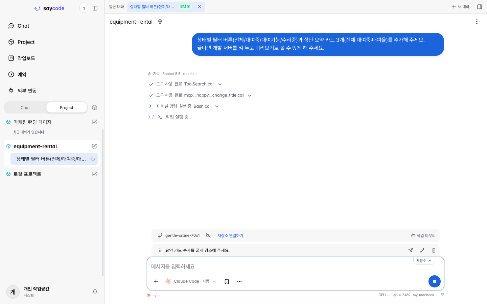
- 답하는 동안 입력창에 요청을 적고 Enter(또는 대기열에 추가)를 누릅니다. 대기열은 최대 3개이며 답이 끝나면 오래된 것부터 차례로 보냅니다. 카드의 드래그 핸들로 순서를 바꿀 수 있습니다.
- 지금 답에 바로 전달하려면 대기 줄의 즉시 요청(보내기 아이콘, 또는 ⌘Enter)을 누릅니다.
- 내용을 고치려면 줄의 연필 아이콘(편집) → 수정 → 체크 아이콘(저장) 또는 X 아이콘(편집 취소) 으로 제자리에서 고칩니다. 휴지통 아이콘은 대기 요청을 지웁니다.
- 응답을 중단하면 대기열은 지워지지 않지만 자동으로 보내지 않습니다. 대기열 위 중단됨 줄의 이어서 보내기(재생 아이콘)를 누르거나 직접 새 메시지를 보내면 이어서 보냅니다.
6.7 AI의 질문에 답하기#
AI가 선택지를 주며 질문하면 입력창 자리가 질문 폼으로 바뀝니다. 사이드바에서는 해당 대화 줄에 주황색 질문 아이콘이 붙습니다.
- 선택지를 누르거나 숫자 키(1~9) 로 고릅니다. 직접 쓰고 싶으면 입력란에 적습니다.
- 질문이 여러 개면 이전 질문 / 다음 질문(또는 다음)으로 넘어갑니다. 하나만 고르는 질문은 고르면 잠시 뒤 자동으로 다음으로 넘어갑니다.
- 마지막에 보내기를 누릅니다. 답하지 않고 넘어가려면 건너뛰기를 누릅니다.
참고
질문에 답하지 않고 있어도 AI가 멈춘 것은 아닙니다. 여러분의 답을 기다리는 중입니다. 대기열은 질문이 열려 있는 동안 전송되지 않습니다.
6.8 답변이 끝난 뒤#
- 다음 단계 카드: 파일을 바꾸거나 여러 단계 작업을 마친 답 끝에 "무엇이 됐고 무엇이 남았는지"와 함께 커밋 요청 / PR 만들기 / PR 머지 / AI로 CI 수정 / 셀프 리뷰 / 완료로 보관 같은 버튼이 나옵니다. 지금 할 수 있을 때만 보이며 작업 마무리와 같은 동작을 합니다. 작업PC의 Saycode CLI가 이 기능을 지원하는 버전이어야 하고, 데스크톱 앱에서 보낸 메시지의 답에만 붙습니다.
- 답변이 끊겼을 때: AI가 중간에 멈췄다면 원인과 함께 이어서 하기가 나옵니다(직접 중단했다면 다시 시도). 일시적인 오류는 자동 재시도 카운트다운과 취소 버튼이, 사용 한도에 걸리면 "{시각}에 다시 시도"가 표시됩니다.
- 자식 AI도구(서브 에이전트): AI가 자식 대화를 만들면 프로젝트 도구(⋮)에 자식 AI도구 N개가 나타나며 지시 전달·중단을 할 수 있습니다.
- 내 메시지 위에 마우스를 올리면 연필 아이콘 여기서 다시 쓰기로 그 메시지 직전까지의 대화에서 새 대화를 만들어 고쳐 보낼 수 있습니다(10장).
7. AI·모델·작업 강도와 사용량#
어떤 AI가 얼마나 깊이 생각해 일할지 정하고, AI 계정의 남은 사용량을 확인합니다. 대부분의 경우 AI 자동에 맡겨도 됩니다.
참고
조건: 쓸 수 있는 AI와 모델만 목록에 보입니다. 새 대화에서는 모두 바꿀 수 있고, 진행 중인 대화에서는 모델과 작업 강도만 바꿀 수 있습니다(AI가 답하는 중에는 불가). 모델 목록은 업데이트로 바뀌므로 앱에 보이는 목록을 기준으로 하세요.
7.1 AI·모델·작업 강도 고르기#
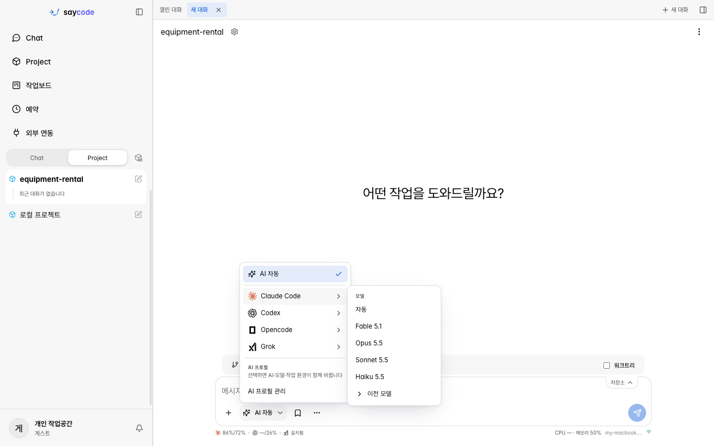
새 대화에서 입력창 아래 줄의 AI 자동(또는 현재 모델명·강도가 보이는 버튼)을 누릅니다.
AI 자동을 고르면 Saycode가 요청 난이도를 보고 AI와 모델·강도를 정합니다. 직접 고르려면 Claude Code / Codex / Opencode / Grok 중 하나에 마우스를 올려 하위 메뉴에서 모델을 고릅니다(자동을 고르면 모델만 자동입니다). 오래된 모델은 이전 모델 묶음에 있습니다. 유료 AI 없이 쓰려면 Opencode의 무료 모델을 고릅니다(7.5).
모델을 직접 고른 뒤 같은 버튼을 다시 열면 작업 강도 하위 메뉴가 나타납니다(AI 자동 상태에서는 보이지 않습니다). 모델에 따라 Low · Medium · High · Xhigh · Max(일부는 Ultra까지)가 있습니다.
보낸 뒤 진행 중인 대화에서는 같은 버튼이 곧바로 모델 목록으로 열립니다.
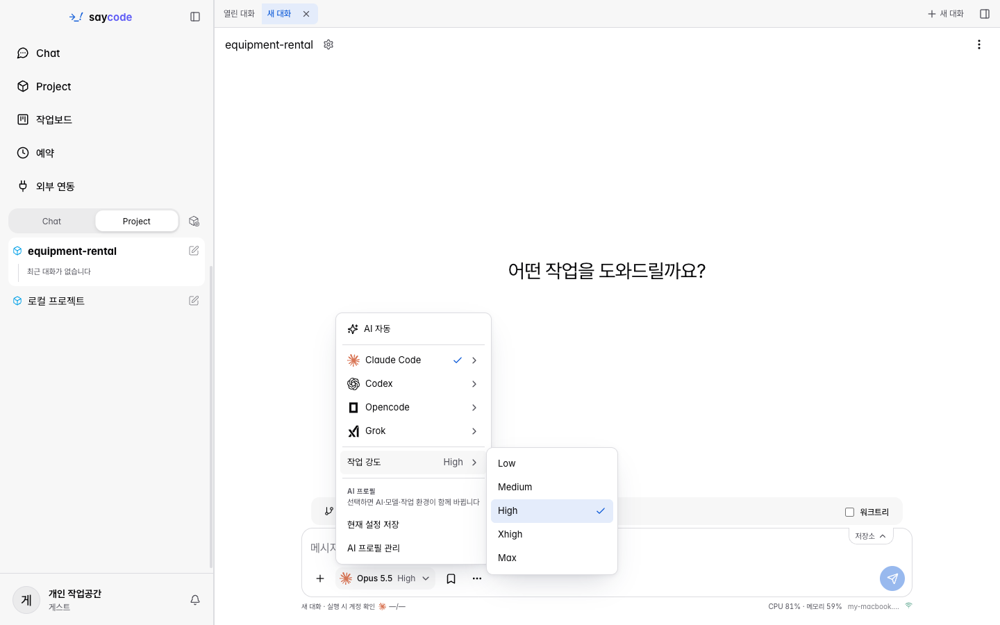
팁
모델을 자동으로 두면 Saycode가 매 턴 난이도에 따라 모델을 정합니다. 오타 수정은 가볍게, 기능 구현은 적정하게, 정말 어려운 문제만 상위 모델로 보냅니다. 응답 위에 "자동 · 모델 · 실행 설정" 한 줄 배지(예: 자동 · Sonnet 5.5 · medium)가 남아 어떻게 골랐는지 알 수 있습니다.
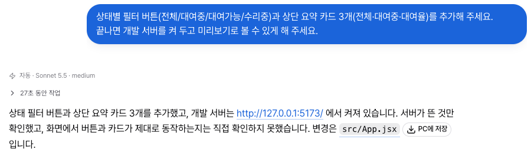
바로가기: 입력창에 포커스를 두고 ⌘⇧M은 다음 모델로, ⌘⇧E는 다음 작업 강도로 바꿉니다(응답 중이거나 선택지가 하나면 동작하지 않음).
7.2 AI 프로필 — 자주 쓰는 조합 저장#
- 새 대화에서 특정 AI를 고르고 모델·강도를 정합니다.
- AI 버튼 메뉴에서 현재 설정 저장을 눌러 프로필로 저장합니다.
- 다음부터 같은 메뉴의 AI 프로필 목록에서 골라 한 번에 적용합니다. 고치거나 지우려면 AI 프로필 관리를 누릅니다.
7.3 AI 목록과 기본값 정하기#
내 설정 → 일반 → AI Models에서 다음을 설정합니다.
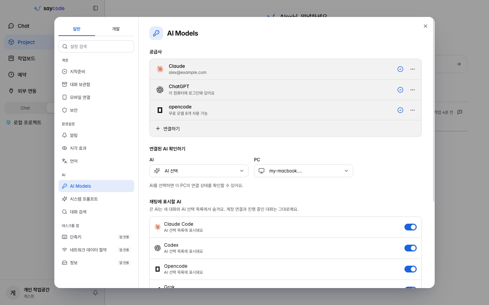
- 연결하기 — 브라우저로 내 Claude·ChatGPT 계정을 연결합니다. 행의 … 메뉴에서 연결 해제, Saycode에 다시 연결, 계정 추가를 고릅니다.
- Opencode 행 … → 설치하기 — 유료 계정 없이 쓰는 무료 모델을 설치합니다(7.5).
- 채팅에 표시할 AI — 안 쓰는 AI를 선택 목록에서 숨깁니다(최소 1개는 표시).
- 새 대화 기본값 — Chat과 Project 새 대화의 AI도구·Model·Effort 기본값을 각각 정합니다.
진행 중인 프로젝트 대화를 다른 AI로 넘기려면 프로젝트 도구(⋮) → 대화 이어가기 → 다른 AI도구로 이어가기를 사용하세요(10.7).
7.4 AI 사용량 창#
입력창 아래 AI 잔여량 버튼을 누르면 이 작업PC에 연결된 AI 계정과 남은 사용량이 열립니다.
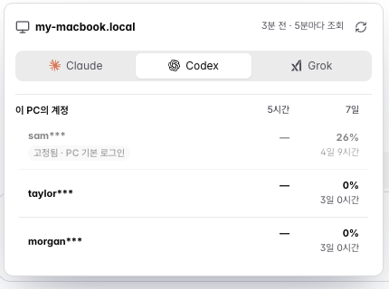
- 맨 위 AI 탭(Claude / Codex / Grok)에서 볼 AI를 고릅니다. 창을 열 때마다 지금 입력창에서 고른 AI 탭이 먼저 열립니다.
- 모든 PC 줄에서 지금 쓸 수 있는지(여유 있어요 / 얼마 안 남았어요 / 모두 다 썼어요)를 봅니다. 내 PC가 두 대 이상일 때 보입니다.
- 이 PC의 계정에서 계정별 5시간·7일 사용률과 초기화까지 남은 시간을 봅니다. 계정별 사용량을 펼치면 막대와 다음 초기화 뒤 평균을 보여 줍니다. 계정이 하나뿐인 개인 사용에서는 모든 PC 줄과 계정별 사용량이 없고 계정 한 줄만 보일 수 있습니다.
- 자동순환계정을 켜면 한 계정이 한도에 걸려도 다른 계정으로 자동 전환해 작업이 멈추지 않습니다(계정을 여러 개 연결했을 때).
- 상단 새로고침 아이콘으로 최신 값을 다시 읽습니다. 입력창에
/usage만 보내도 같은 요약이 대화에 붙습니다(Claude 대화는 Claude가 직접 처리).
참고
작업PC가 온라인이어야 실제 값이 보입니다. 한도에 가까워지면 입력창 아래에 사용률과 초기화까지 남은 시간이 자동으로 표시되고, 전환할 수 있는 계정 수도 알려 줍니다. [로그인] 조직 계정 선택, 모든 PC 요약은 로그인·여러 PC 환경에서 보입니다.
사용 기록은 [로그인] 내 설정 → 일반 → 토큰 사용량에서 개요·프로젝트별·모델별·출처별로 확인하고 최근 7·30·90일을 비교합니다.
7.5 무료 모델로 시작하기 (Opencode)#
Claude나 ChatGPT 유료 계정이 없어도 opencode를 이 컴퓨터에 설치해 무료 모델로 바로 대화할 수 있습니다(v0.1.80 이상). 유료 AI가 있는 사용자도 함께 설치해 두고 대화마다 골라 쓸 수 있습니다.
참고
조건: 이 컴퓨터가 내 작업PC이고 온라인일 때만 설치할 수 있습니다. 조직이 AI 모델을 제한했다면 설치할 수 없고, Windows 시험판에서는 보이지 않습니다.
- 다음 중 편한 곳에서 시작합니다.
- 시작준비의 AI 단계에서 무료 모델로 시작하기
- 내 AI 계정 연결하기 창(또는 내 설정 → 일반 → AI Models → 연결하기)에서 무료 모델 (opencode)
- 내 설정 → 일반 → AI Models의 Opencode 행 … 메뉴 → 설치하기
- 설치 전에 Saycode가 설치 위치와 무료 모델의 조건(기간 한정 제공, 모델마다 다른 입력 보관·학습 정책, 유료 모델보다 낮을 수 있는 성능)을 보여 줍니다. 읽고 확인한 뒤에만 설치됩니다.
- "무료 모델로 시작할 준비가 됐어요"가 나오면 끝입니다. 새 대화의 입력창 아래 AI 버튼에서 Opencode를 고릅니다(유료 AI 없이 시작했다면 이미 골라져 있습니다).
- 모델 목록에서 무료 모델은
무료, 추천하는 모델은추천 무료로 표시됩니다. 모델을 고르지 않으면 메시지마다 추천 무료 모델이 자동으로 쓰입니다.
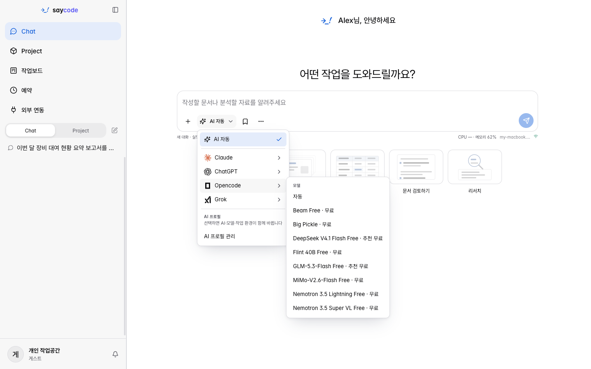
쓸 수 있는 무료 모델이 없으면 메시지를 보내지 않고 다시 확인하라고 안내합니다. 잠시 뒤 다시 확인하거나, 다른 AI를 연결하세요.
주의
무료 모델에 무엇을 보내는지 확인하세요. 무료 모델은 OpenCode가 기간을 정해 제공하며, 모델마다 데이터 정책이 다릅니다. OpenCode Zen 문서(2026년 11월 1일 확인 기준)에는 GLM-5.3-Flash Free와 DeepSeek V4.1 Flash Free는 입력을 보관하지 않고 학습에 쓰지 않는다고, Big Pickle 등 일부 모델은 무료 기간에 입력이 모델 개선에 쓰일 수 있다고, NVIDIA Nemotron 계열은 체험용이라 개인정보·기밀을 보내지 말라고 적혀 있습니다. 목록과 정책은 바뀔 수 있으니 OpenCode Zen 문서에서 직접 확인하세요. 회사·고객 코드나 기밀 자료는 제공사가 보관·학습을 하지 않는다고 밝힌 무료 모델만 쓰거나, 유료·조직 AI를 연결해 쓰세요.
하루에 얼마나 쓸 수 있는지는 20.5에 정리했습니다.
8. 작업 영역#
프로젝트 화면의 오른쪽에서 파일·변경·터미널·브라우저·미리보기를 보며 AI의 작업을 확인합니다. 가운데 대화와 나란히 놓여 대화와 작업 결과를 함께 볼 수 있습니다.
참고
조건: 프로젝트에 온라인 작업PC가 연결되어 있어야 합니다. 변경 탭은 Git 프로젝트에서만 쓸 수 있습니다.
8.1 열기와 패널 추가#
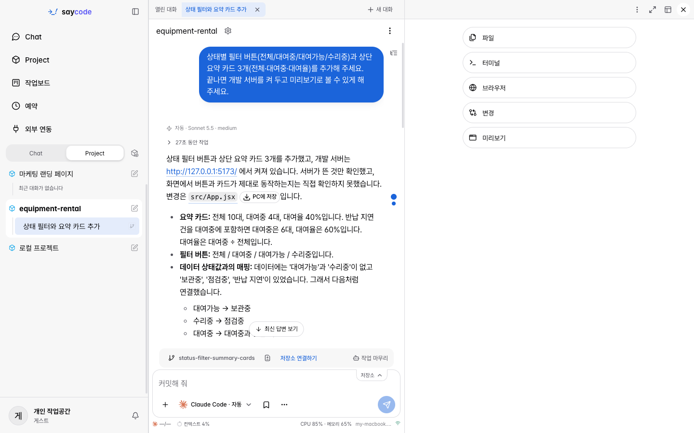
- 프로젝트 대화 오른쪽 위의 도구 펼치기(접을 때는 도구 접기, 단축키 ⌘⇧B)를 누르면 파일 · 터미널 · 브라우저 · 변경 · 미리보기 목록이 바로 나옵니다. 열 도구를 고르세요.
- 패널이 이미 열려 있으면 탭 줄 오른쪽의 작업 패널 추가 아이콘으로 다른 도구를 더 엽니다. 작업트리에 PR이 있으면 PR 보기도 있고, 설치한 확장이 더하는 도구(예: Moai)도 같은 메뉴에 나옵니다.
- 탭을 끌어 순서를 바꾸고, ⌘W로 닫습니다. 닫은 탭은 ⋮ 메뉴에서 다시 열 수 있고, 대화별로 열어 둔 도구가 복원됩니다.
- 중간 경계를 끌어 너비를 조절하고, 패널 추가로 터미널·브라우저·대화를 오른쪽 또는 아래에 나란히 열 수 있습니다(⌘⌥T / ⌘⌥B / ⌘⌥C). 작업 영역 오른쪽 위의 확대 아이콘으로 작업 영역을 넓게 펼칠 수 있습니다.
8.2 파일 탭#
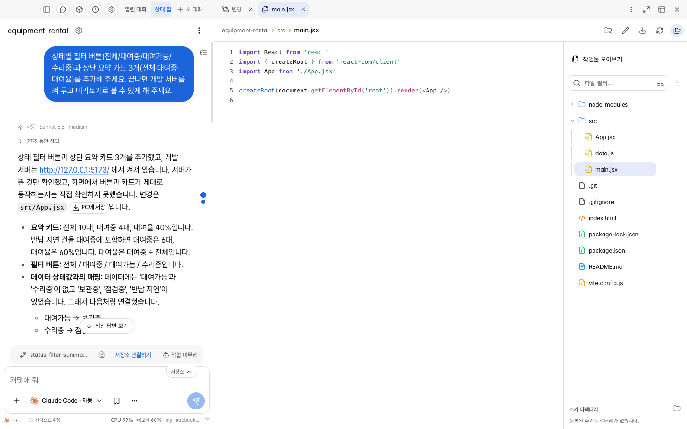
- 도구 펼치기 → 파일을 엽니다. 폴더 아이콘으로 파일 목록을 접고 펼치며, 파일을 누르면 내용이 열립니다(방향키·Enter로도 이동).
- 파일 필터… 칸에 이름을 입력하면 목록이 바로 걸러지고, Enter를 누르면 프로젝트 전체 파일 이름을 검색합니다.
- 파일 안의 내용으로 찾으려면 검색창 옆 내용 검색 버튼을 켜고 검색어를 적은 뒤 Enter를 누릅니다. (작업PC가 지원할 때만 됩니다.)
- AI가 만든 문서·이미지·HTML은 작업물 모아보기에서 한곳에 모아 봅니다. 범위를 이 대화 / 이 프로젝트로 고르고 열 작업물을 누릅니다.
- 파일 행의 ⋮ → Finder에서 보기,
.csv/.tsv파일은 표로 보기(표 아이콘)로 열립니다. HTML·DOCX 뷰어는 앱의 다크 모드를 따릅니다. - 파일 패널의 ⋮ 메뉴에는 새 파일 / 새 폴더 / 파일 업로드 / 파일 새로고침 / 폴더 접기가 있습니다. 앱 밖에서 만든 파일이 목록에 안 보이면 파일 새로고침을 누르세요.
팁
답변에 파일 이름이 나왔다고 패널이 저절로 열리지는 않습니다(작업물 파일은 완료 시 자동으로 열립니다). 파일 이름을 눌러 직접 여세요.
8.3 변경 탭#
AI가 바꾼 파일과 바뀐 줄을 한눈에 확인합니다.
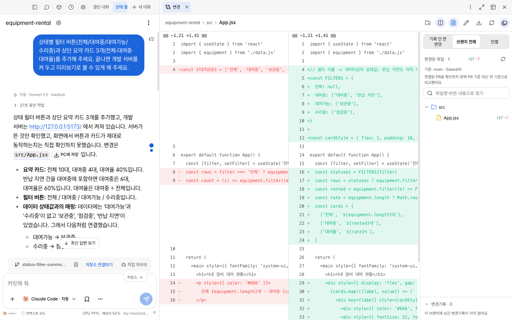
- 작업 패널 추가 → 변경을 엽니다.
- 위쪽 탭에서 범위를 고릅니다 — 기록 안 한 변경 / 브랜치 전체 / 턴별.
- 브랜치 전체 — 작업트리 브랜치가 갈라진 뒤의 모든 변경기록과 아직 기록하지 않은 변경을 한 목록으로 봅니다. 아래 변경기록 목록에서 하나를 누르면 그 변경기록만 읽기 전용으로 보이고, 전체로 돌아가기로 복귀합니다.
- 턴별 — AI가 한 번 답한 단위(턴)로 봅니다. 이 턴 / 직전 턴 이후 / 대화 시작 대비 중에서 고릅니다.
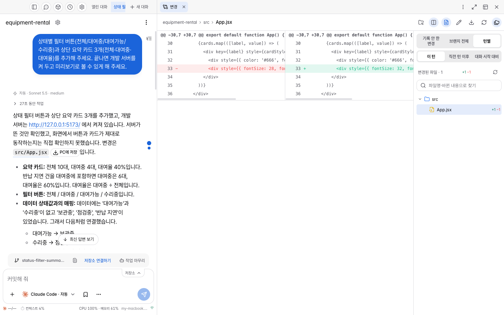
- 파일을 누르면 좌우 비교 diff(또는 한 줄 비교)가 열립니다. 바뀐 줄에 리뷰 코멘트를 달아 AI에게 보낼 수 있습니다.
- 파일명·바뀐 내용으로 찾기로 목록을 거르고, diff 안에서는 ⌘F로 찾습니다.
- 목록 끝의 잠금 파일 / 생성된 파일 / 빌드 산출물 그룹은 기본으로 접혀 있으니 누르면 펼쳐집니다.
참고
턴별은 이 기능 이후에 시작한 턴부터, 내가 만든 대화에서 기록되며 macOS·Linux 로컬 Git 환경에서 지원됩니다. 브랜치 전체는 작업트리에서 연 대화에서만 보입니다. 끝난 턴과 변경기록 단건 보기는 읽기 전용이라 줄 코멘트를 달 수 없습니다.
8.4 터미널 탭#
작업PC에 붙은 실제 셸입니다. 탭을 바꿔도 살아 있고 연결이 끊기면 스스로 재연결하며 출력을 이어받습니다.
- ⌘F: 터미널 안에서 찾기(
3/12처럼 위치 표시) - 링크 클릭: 앱 브라우저에서 열기 / 외부 브라우저에서 열기 / 주소 복사
- 키보드 스크롤은 Shift+PageUp/PageDown, 우클릭 메뉴로 복사·붙여넣기
- 글꼴·글자 크기, 입력 미리 표시는 내 설정 → 개발 → 터미널에서 바꿉니다.
- 터미널에서 pager가 열리면
q로 빠져나오거나git --no-pager log처럼 실행하세요.
참고
작업PC의 실행기가 다시 시작되면 "이 터미널이 닫혀요"라는 안내와 함께 터미널이 닫힐 수 있습니다.
8.5 브라우저와 미리보기#
- 브라우저 패널에서 주소창에
http://localhost:5173같은 주소를 입력하면 내 작업PC에서 돌아가는 앱이 바로 열립니다. 탭 줄·도구 막대·주소창이 한 창처럼 이어지고, 로그인·쿠키는 앱을 다시 켜도 남습니다(로그아웃이나 계정·조직을 바꾸면 지워집니다). → 고치는 방법은 9장 - 미리보기는 프로젝트의 개발 서버 결과를 보여 줍니다. 프로젝트 도구(⋮) → 미리보기를 누르고, 탭에 "미리보기가 아직 실행 전입니다"가 보이면 그 안의 미리보기 실행 버튼을 누릅니다. 새로고침(두 화살표)과 재시작(한 방향 회전 화살표) 버튼은 따로 있습니다.
- 이미 띄워 둔 서버는 리슨 포트 감지가 찾아 줍니다. 목록에서 연결을 누르거나 포트 번호를 직접 입력하세요.
팁
미리보기 탭에 "미리보기가 아직 실행 전입니다"만 보이면 프로젝트 설정 → 개발 → 실행에 개발 서버 명령·포트가 저장되어 있지 않은 상태일 수 있습니다. 설정을 저장하거나, AI에게 서버를 켜 달라고 하거나 터미널에서 켠 뒤 브라우저 패널에 http://localhost:<포트>를 직접 열거나 리슨 포트 감지를 쓰세요.
프로젝트 설정 → 개발 → 실행에 개발 서버 명령과 개발 서버 포트를 적고 실행 설정 저장을 누르면 미리보기가 그 값을 사용합니다.
8.6 PR 보기#
[로그인] 대화 속 GitHub PR 링크를 누르면 오른쪽 작업 패널에서 PR의 설명·코멘트·리뷰·커밋을 시간순으로 읽습니다(Shift를 누른 채 클릭하면 외부 브라우저). 파일 탭에서는 전체 diff를 보고 "이 PC에서 읽음"을 표시하며, 리뷰 지적 고치기로 AI에게 수정을 맡기고, 조건이 맞으면 아래 머지 상태에서 머지 → 병합으로 합칩니다. 작업PC에 gh가 설치·로그인되어 있어야 하며 GitHub 저장소만 지원합니다.
9. 보면서 고치기#
실행 중인 화면에서 마음에 안 드는 요소를 직접 집어 AI에게 고쳐 달라고 요청합니다. 요소를 여러 개 골라 한 번에 보내고, 여백·간격·글자도 직접 조절할 수 있습니다.
참고
조건: 프로젝트 대화가 열려 있고, 고칠 앱이 작업PC에서 실행 중이어야 합니다(예: http://localhost:5173). 요소를 넣을 대화가 없으면(별도 창으로 띄운 브라우저 등) 주석 트레이에 담긴 채 이유가 안내됩니다. 컴포넌트와 소스 위치(파일·줄) 표시는 개발 서버 앱에서 React Source Locator 같은 확장이 켜져 있을 때만 붙습니다.
9.1 요소를 집어 주석 트레이에 담기#
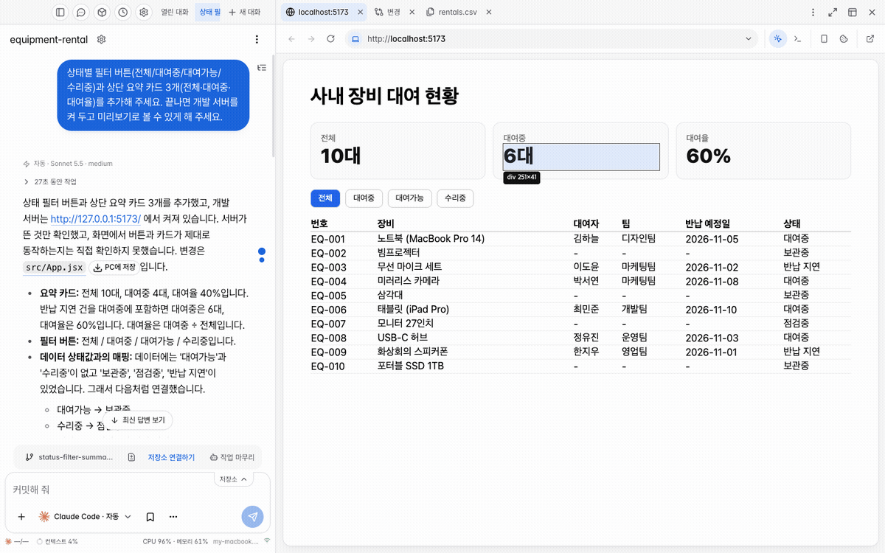
- 도구 펼치기 → 작업 패널 추가 → 브라우저를 열고 주소창에 앱 주소를 입력합니다.
- 브라우저 도구 막대의 요소를 골라 주석 트레이에 담기(요소 선택) 버튼을 누릅니다.
- 페이지에서 고칠 요소를 클릭하면 아래 주석 트레이에 한 줄로 담깁니다. 한 번 누를 때마다 요소 하나만 고르므로, 더 담으려면 버튼을 다시 누르세요(고르는 중 Esc로 취소).
- 각 줄에 요청 내용(코멘트, 2,000자까지)을 적고 의도를 고릅니다 — 수정해 줘 / 질문 / 참고.
- 스크린샷 썸네일을 누르면 표시 창이 열립니다. 펜 · 사각형 · 지우개와 빨강·노랑·파랑으로 표시하고 적용을 누릅니다(⌘Z로 되돌리기, 원본으로 복원 가능). 적용하면 썸네일에 표시됨이 붙습니다.
- 모두 보내기를 누르면 번호별 요청 글(셀렉터·스타일·HTML 정보)과 스크린샷이 대화 입력창에 들어갑니다. 바로 전송되지는 않으니 내용을 확인하고 전송 버튼을 누르세요.
- AI가 코드를 고치면 개발 서버가 변경을 반영합니다. 화면이 그대로면 브라우저 패널의 새로고침을 누르세요.
팁
트레이가 비어 있을 때 Shift를 누른 채 요소를 클릭하면 트레이를 거치지 않고 그 요소 하나가 바로 입력창에 들어갑니다(빠르게 하나만 보낼 때).
참고
트레이는 브라우저 패널마다 따로 있고, 최대 20개까지 담깁니다. 패널을 닫거나 앱을 다시 시작하면 비워집니다. 새로고침해도 변경이 반영되지 않으면 개발 서버를 다시 시작하세요.
9.2 디자인 조정 — 직접 값을 바꿔 보기#
AI에게 글로 설명하기 어려운 미세 조정은 직접 값을 바꿔 보고 그 결과를 요청으로 보냅니다.
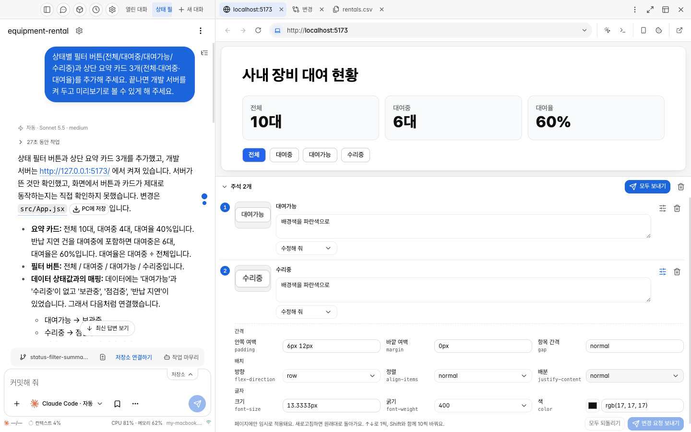
- 주석 트레이에 담은 요소 행의 조절 아이콘(디자인 조정) 을 누릅니다.
- 간격(안쪽 여백 padding, 바깥 여백 margin, 항목 간격 gap) · 배치(방향·정렬·배분) · 글자(크기·굵기·색) 항목에 값을 적고 Enter를 누르면 페이지에 바로 적용됩니다. 길이는 ↑↓로 1씩(Shift와 함께 10씩) 바꾸고, 배치·굵기는 목록에서, 색은 색 선택기로 고릅니다.
- 마음에 안 들면 항목 옆 되돌리기 또는 모두 되돌리기를 누릅니다.
- 변경 요청 보내기를 누르면 그 요소의 선택자·텍스트와 속성별 전 → 후 값이 입력창에 들어가고 트레이에서 빠집니다. 확인 후 보내면 AI가 소스 코드에 반영합니다.
중요
디자인 조정은 페이지에만 임시로 적용됩니다. 새로고침하거나 다른 주소로 이동하면 원래대로 돌아가고 트레이에 기록한 디자인 변경도 지워집니다. 반드시 변경 요청 보내기로 AI에게 반영을 맡기세요. 바꾼 항목이 없으면 보낼 수 없습니다.
9.3 브라우저 도구 막대#
도구 아이콘으로 요소 선택, 콘솔·네트워크 오류 수집, 뷰포트(데스크톱·태블릿·모바일 화면 크기), 쿠키 가져오기(로그인 상태 이전), 새 창에서 열기를 씁니다. 주소창의 주소 후보에서 감지된 로컬 서버 주소를 고르고, 새로고침은 Shift+클릭하면 캐시를 무시합니다. 새 창으로 띄운 브라우저에는 요소를 넣을 대화가 없을 수 있습니다.
10. 대화 관리#
대화가 많아져도 길을 잃지 않도록, 훑어보고, 정리하고, 찾고, 이어갑니다.
10.1 대화 요약과 메시지 이동 레일#
참고
조건: 내 메시지가 2개 이상인 프로젝트 대화에서 보입니다. Chat에는 아직 없습니다. 레일에는 지금 불러온 메시지만 보이며, 이전 기록은 대화 위쪽 이전 대화 버튼으로 불러옵니다.
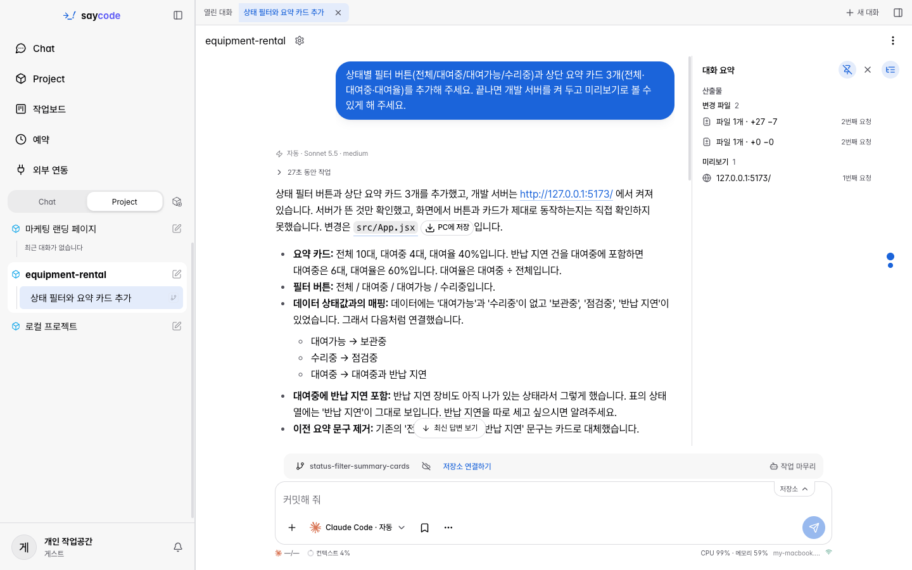
- 대화 오른쪽 끝(스크롤바 왼쪽)의 레일에서 점에 마우스를 올리면 요청 앞부분과 만든 작업물이 보입니다. 점을 누르면 그 메시지로 이동합니다(키보드: Tab → 위/아래 화살표 → Enter).
- 레일 맨 위 대화 요약 버튼을 누르면 패널이 열려 이 대화의 계획 · PR · 커밋 · 변경 파일 · 미리보기 · 리뷰 · 곁질문 · 백그라운드 작업을 한눈에 봅니다.
- 패널 항목을 누르면 해당 작업물이 나온 메시지로 이동하고, PR 옆 아이콘은 PR 화면을 엽니다.
- 대화 옆에 고정을 누르면 대화 옆 고정 열로 열립니다. 다른 대화로 가거나 앱을 다시 열면 닫혀 있으니 대화 요약 버튼으로 다시 엽니다.
10.2 열린 대화 탭#
- + 새 대화(⌘T)로 새 탭을 열고, 탭을 끌어 순서를 바꾸며 ⌘W로 닫습니다. ⌘⇧T는 닫은 탭 다시 열기, ⌘⇧J는 질문·승인을 기다리는 대화로 바로 이동입니다(전체 단축키는 19장).
- 백그라운드 작업(빌드·테스트 감시, 자식 AI도구)이 도는 동안에는 응답이 끝나도 완료로 표시하지 않고 대화 탭에 백그라운드 작업 중 배지가 붙습니다.
10.3 고정#
- 대화 줄에 마우스를 올리고 오른쪽 핀 버튼을 누릅니다. 목록 맨 위 고정된 대화 영역에 모입니다.
- 고정된 대화를 끌어 순서를 바꾸면 ⌘1~9(Windows는 Ctrl+1~9)로 첫 아홉 대화를 바로 엽니다.
- 풀 때는 같은 핀 버튼을 다시 누릅니다. [로그인] 로그인 계정에서는 다른 PC·웹에서도 같은 고정 목록이 보입니다.
10.4 보관하기 — 지금 안 보이게 정리#
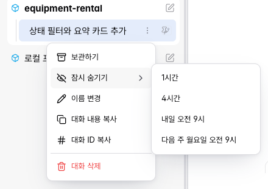
- 프로젝트를 눌러 대화 목록을 펼치고, 대화에 마우스를 올려 점 세 개(⋮) 를 누릅니다.
- 보관하기를 누릅니다. 확인 창 없이 바로 목록에서 사라지고 "대화를 보관했어요" 알림이 10초 동안 나옵니다.
- 실수라면 알림의 되돌리기 또는 ⌘Z(Windows는 Ctrl+Z)를 누릅니다. 알림의 보관함으로 이동은 대화 보관함을 엽니다.
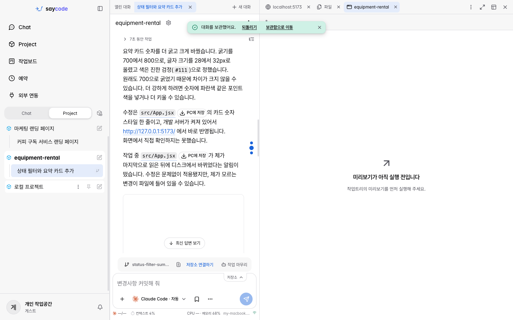
같은 ⋮ 메뉴에는 이름 변경, [로그인] 조직에 공유, 대화 내용 복사, 대화 ID 복사, 대화 삭제(확인 후 되돌릴 수 없음)도 있습니다.
팁
여러 대화를 한 번에: Shift를 누른 채 대화를 하나씩 클릭해 고르고, 선택된 대화의 ⋮ → 선택한 N개 보관 또는 선택한 N개 삭제를 고릅니다. 작업트리가 연결된 대화가 있으면 확인 창에서 보관 또는 보관 & 작업트리 삭제를 고릅니다. 단일 대화 보관은 작업트리를 지우지 않습니다.
팁
작업트리에 연결된 PR이 병합된 대화는 사이드바에서 마우스를 올리면 뜨는 창에 병합됨이 보이고 그 아래 보관하기 버튼으로 바로 보관할 수 있습니다. 대화로 *"이 대화 보관해줘"*라고 말해도 응답이 끝난 뒤 보관됩니다.
10.5 잠시 숨기기#
당장은 신경 쓰지 않아도 되는 대화를 정한 시각까지 목록에서 치워 둡니다. 시각이 되거나 AI가 승인·질문으로 답을 기다리면 원래 자리로 돌아옵니다.
- 대화 줄의 ⋮ → 잠시 숨기기를 누릅니다.
- 1시간 / 4시간 / 내일 오전 9시 / 다음 주 월요일 오전 9시 중에서 고릅니다.
- 숨긴 대화는 프로젝트 목록 아래 숨긴 대화 N을 눌러 펼치면 남은 시간과 함께 보입니다. 행을 누르면 그대로 열고, 눈 버튼(다시 보이기) 을 누르면 바로 원래 목록으로 돌아옵니다.
참고
프로젝트 대화에서만 쓸 수 있습니다(Chat·여러 대화 동시 숨기기는 미지원). 숨긴 상태는 이 컴퓨터에만 저장됩니다. 숨기는 동안에는 비활동 자동 보관 기간을 세지 않습니다. 숨긴 직후 되돌리기나 ⌘Z로 취소할 수 있습니다.
10.6 대화 보관함과 자동 보관#
보관한 대화는 사라지지 않고 내 설정 → 일반 → 대화 보관함에서 찾습니다.
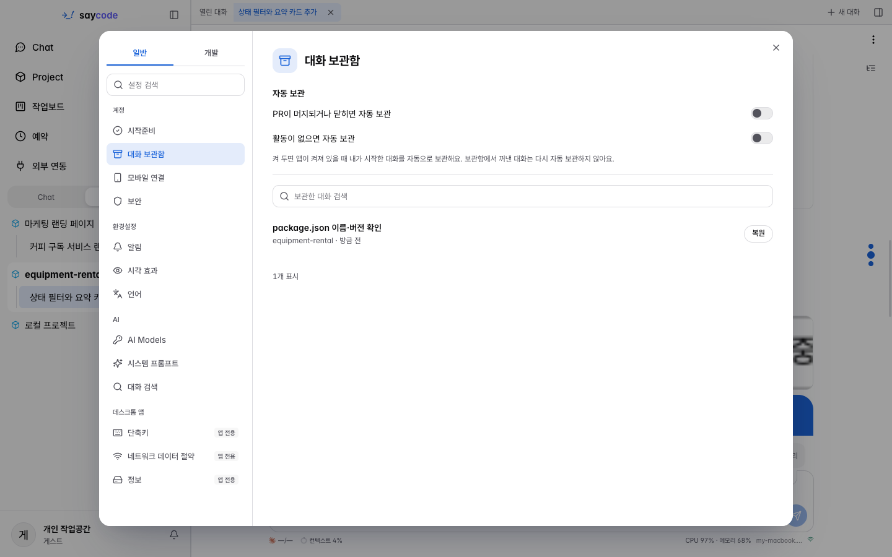
- 맨 위에서 자동 보관 규칙을 확인하고, 보관한 대화 검색으로 보관한 대화를 찾습니다.
- 대화 줄 오른쪽의 복원을 누릅니다(Project 대화는 확인 창에서 한 번 더). 기존 제목과 기록이 유지된 채 열리고 AI는 자동으로 실행되지 않습니다.
자동 보관은 대화 보관함 맨 위에서 켭니다(기본은 꺼짐).
- PR이 머지되거나 닫히면 자동 보관
- 활동이 없으면 자동 보관 + 활동 없는 기간(1~90일, 기본 14일)
응답 중·입력 대기·방금 활동한(10분 이내)·화면에 열린·고정된 대화는 보관이 미뤄지고, 사이드바 줄의 보관 아이콘이 이유를 알려 줍니다. 한 번에 최대 3개씩 보관하며 작업트리는 지우지 않습니다.
10.7 대화 이어가기와 갈래#
프로젝트 도구(⋮) → 대화 이어가기(엇갈린 화살표 아이콘)에서 지금 대화를 그대로 둔 채 새 대화를 시작합니다.
| 메뉴 | 하는 일 |
|---|---|
| 다른 AI도구로 이어가기 | 다른 AI(예: Claude → Codex)로 이어 갑니다. 모델·작업 강도도 고릅니다. |
| 같은 AI로 갈래 만들기 | 같은 AI로 지금까지의 기록을 복제한 갈래 대화를 만들어 다른 방향을 시도합니다. 전체 또는 특정 메시지까지를 고르고 갈래 만들기를 누르면 새 탭이 열리고 헤더에 갈래 원본 링크가 생깁니다. 갈래는 원래 대화와 같은 작업 폴더를 공유합니다. |
| 터미널에서 이어가기 | 이 컴퓨터의 Claude·Codex 대화를 터미널에서 이어 갈 명령을 복사합니다. |
| 이 대화를 작업트리로 옮기기 / 이 대화를 본 폴더로 되돌리기 | 진행 중인 대화를 지금 변경사항과 함께 새 작업트리로 옮기거나 되돌립니다. 작업PC의 Saycode 실행기가 최신일 때만 선택할 수 있고, 회색이면 메뉴에 사유가 표시됩니다 (11.6). |
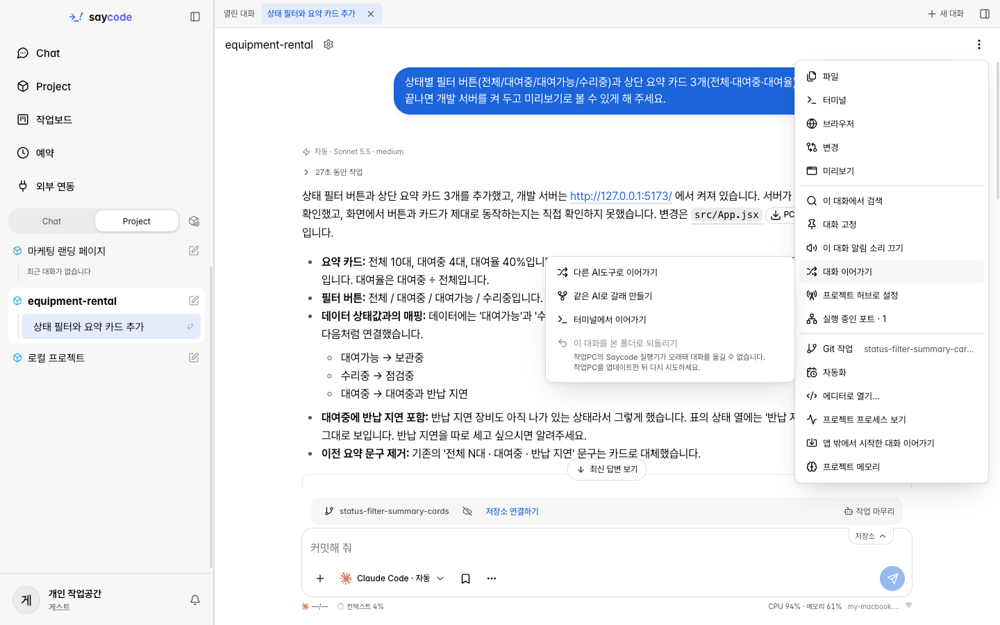
그 밖에:
- [로그인] 내 메시지에 마우스를 올려 여기서 다시 쓰기(연필)를 누르면, 그 메시지 직전까지의 대화로 새 대화가 열리고 입력창에 원래 메시지가 채워집니다(Claude 대화). 원래 대화는 그대로 남습니다.
- 입력창에서
@로 같은 프로젝트의 다른 대화를 칩으로 붙여 AI가 읽게 할 수 있습니다(6.4). - 프로젝트 도구 → 앱 밖에서 시작한 대화 이어가기로 터미널 등 앱 밖에서 시작한 AI 대화를 가져옵니다.
10.8 찾기 — 대화 검색과 빠른 열기#
| 방법 | 단축키 | 하는 일 |
|---|---|---|
| 대화 내 검색 | ⌘F | 열린 대화 안에서 단어를 찾아 이동. 전체 대화에서 검색으로 넘길 수 있습니다. |
| 대화 검색 | ⌘⇧F | 모든 대화의 제목·내 요청·AI 응답에서 단어를 찾습니다. [로그인] 시맨틱 탭은 뜻으로 지금 프로젝트의 기억을 찾습니다. |
| 빠른 열기 | ⌘P | 프로젝트·대화·파일 이름을 입력해 바로 엽니다. > 를 맨 앞에 입력하면 새 대화·응답 중단·터미널 열기·패널 분할·설정 열기·대화 고정/보관·작업보드 같은 명령만 보입니다(⌘⇧P로 바로 열림). |
| 사이드바 검색 | ⌘K | 프로젝트 목록을 이름으로 거릅니다. |
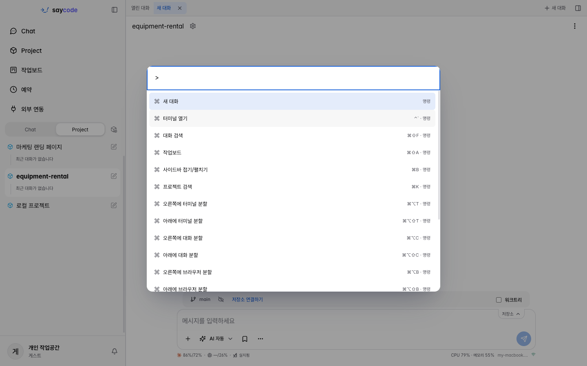
를 입력해 연 명령 목록 — 새 대화, 터미널 열기, 대화 검색, 작업보드, 화면 분할 등" />참고
대화 검색을 쓰려면 내 설정 → 일반 → 대화 검색 → 대화 검색 사용이 켜져 있어야 합니다. 검색 인덱스 삭제로 저장된 검색 데이터를 지울 수 있습니다.
11. 작업 마무리#
AI가 만든 변경을 점검하고, PR을 올리고, 대화를 정리하는 마지막 단계입니다. 입력창 위 줄의 작업 마무리 메뉴 하나에서 모두 시작합니다.
참고
조건: 이미 시작한 프로젝트 대화에서만 보입니다(입력창 위 줄을 접어 두었거나 AI 질문 화면이 떠 있으면 숨겨집니다). PR 올리기는 작업트리에서 연 대화여야 하고 원격 저장소가 필요합니다(없으면 변경기록 남기기로 바뀝니다).
11.1 작업 마무리 메뉴#
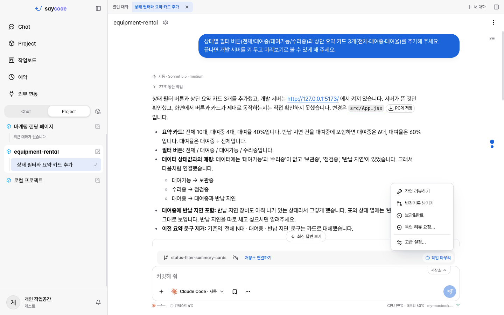
- 프로젝트 대화를 엽니다.
- 입력창 위 줄 오른쪽 끝의 로봇 아이콘 작업 마무리 버튼을 누릅니다.
- 메뉴에서 원하는 항목을 고릅니다.
| 메뉴 | 한 줄 설명 |
|---|---|
| 작업 리뷰하기 | 지금 일하는 AI가 변경을 점검하고 문제를 직접 고칩니다. |
| 독립 리뷰 요청… | 다른 AI가 읽기 전용으로 검토하고 결과만 전달합니다. |
| PR 올리기 | 리뷰·테스트·커밋·push·PR 생성에 CI와 리뷰 봇 처리, 머지까지 맡깁니다. 원격 저장소가 있을 때 보입니다. |
| 변경기록 남기기 | 원격 저장소가 없을 때 PR 올리기 대신 보입니다. 변경을 로컬 변경기록(커밋)으로 남깁니다. |
| 보관&완료 | 대화를 보관하고 마무리합니다. |
| 고급 설정… | 반복 횟수, 독립 리뷰어, 완료 전 확인을 정합니다. |
AI가 응답 중이면 작업 리뷰하기 · PR 올리기를 누를 때 항목 아래 "지금 작업이 끝나면 이어서 실행해요"가 보이고, 누르면 입력창 위 대기열에 들어가 끝난 뒤 차례로 실행됩니다(끌어서 순서 변경·삭제).
11.2 작업 리뷰하기#
- 작업 마무리 → 작업 리뷰하기를 누릅니다.
- 같은 AI가 변경을 점검하고 문제를 직접 고칩니다. medium 이상 지적이 나오면 정해 둔 반복 횟수만큼 리뷰를 이어 가고, 없으면 첫 회에서 끝납니다.
- 도중에 멈추려면 작업 리뷰 중지를 누릅니다. 조회가 실패하면 작업 리뷰 상태 다시 확인, 종료 후 새로 시작하려면 작업 리뷰 다시 시작을 누릅니다.
반복 횟수는 작업 마무리 → 고급 설정…의 작업 리뷰 반복 횟수에서 바꿉니다(기본 7).
11.3 독립 리뷰 요청#
코드를 쓴 AI와 다른 AI에게 새 눈으로 검토시키고 싶을 때 씁니다. 리뷰어는 현재 대화와 분리된 새 대화에서 읽기 전용(파일 편집·commit·push 금지)으로 일합니다.
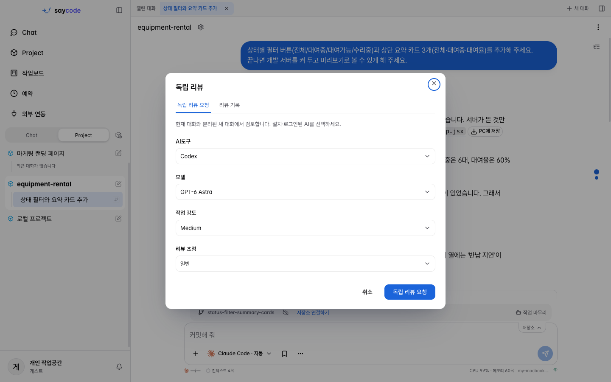
- 작업 마무리 → 독립 리뷰 요청…을 누릅니다.
- AI도구 · 모델 · 작업 강도 · 리뷰 초점을 고릅니다. 코드를 쓴 모델과 다른 리뷰어가 먼저 제안됩니다.
- 독립 리뷰 요청 버튼을 누릅니다. 성공하면 리뷰 기록 탭으로 이동합니다.
- 리뷰 기록에서 진행 상태와 결과를 보고 재시도 / 결과 전달 / 정리를 합니다.
참고
읽기 전용 제한은 Claude 리뷰어에만 적용됩니다. 작업보드에서 이런 카드에는 읽기 전용 배지가 붙습니다.
11.4 PR 올리기#
- 작업 마무리 → PR 올리기를 누릅니다. 확인 창 없이 곧바로 요청됩니다.
- AI가 PR을 만든 뒤 CI 실패, 리뷰 봇 지적, 스택 PR, 충돌을 처리하고, 모두 통과하면 base 브랜치에 머지까지 합니다.
- 봇 판정이 없거나 필수 승인 리뷰가 남는 등 조건이 남으면 머지하지 않고 남은 상태를 보고합니다.
- 진행 상황은 입력창 위 PR 번호 칩(열림·병합됨·닫힘, CI 배지)과 PR 보기에서 확인합니다.
중요
원격 저장소가 연결되지 않은 프로젝트에서는 PR을 만들 수 없어 변경기록 남기기(로컬 커밋)까지만 요청합니다. [로그인] GitHub 연결과 작업PC의 gh 로그인이 필요한 부분이 있습니다.
11.5 보관&완료#
- 작업 마무리 → 보관&완료를 누릅니다.
- 대화가 보관되고 "되돌리기"가 나옵니다. 작업트리는 지우지 않습니다.
- 고급 설정…의 보관&완료 전에 확인을 켜면 보관 전에 확인 창이 뜹니다.
작업트리까지 정리하고 싶다면 사이드바에서 여러 대화를 골라 보관 & 작업트리 삭제를 쓰거나 작업트리 목록에서 삭제하세요.
11.6 작업트리 안전망#
작업트리는 대화마다 만들어지는 복사본 작업 폴더라서, 여러 대화를 동시에 돌려도 서로 부딪히지 않습니다. Saycode는 작업트리를 지워도 작업이 사라지지 않도록 안전장치를 둡니다.
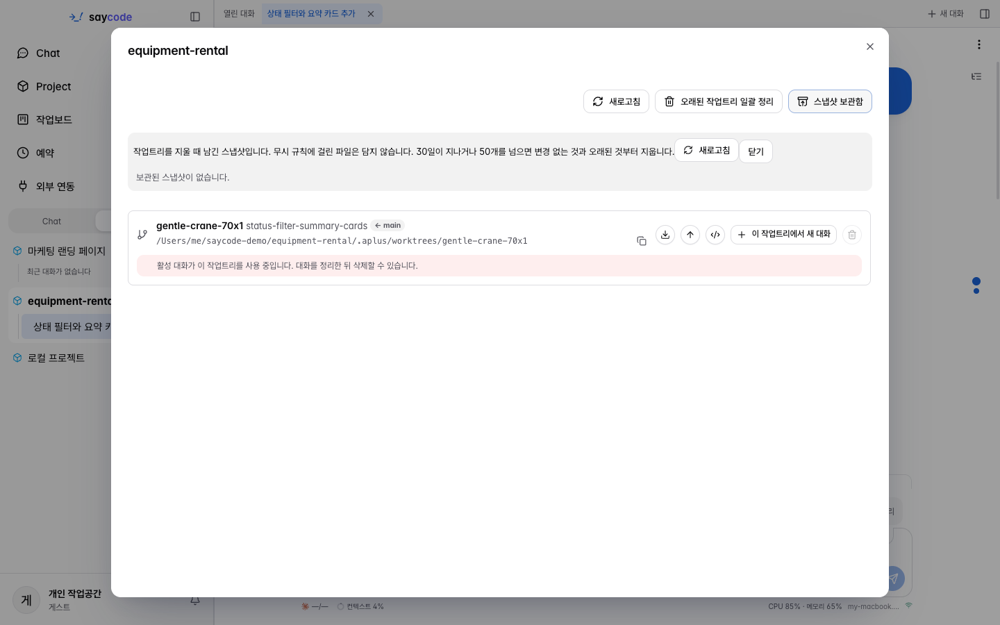
- 새 작업트리는 원격 최신 기본 브랜치(
origin/main등)에서 시작합니다. 원격을 받지 못하면 이유와 함께 로컬 브랜치 기준으로 시작할지 묻습니다. - 삭제 전에는 이 작업트리에만 있는 로컬 전용 파일(
.env등)의 수와 폴더를 알려 줍니다. - 지우기 전에 스냅샷을 남깁니다(커밋하지 않은 변경·새 파일 포함, 무시 규칙에 걸린 파일은 제외).
작업트리 목록 열기
- 프로젝트 대화에서 프로젝트 도구(⋮) → Git 작업을 엽니다.
- 작업트리…를 누릅니다.
- 위쪽에 새로고침 / 오래된 작업트리 일괄 정리 / 스냅샷 보관함 버튼이 있고, 작업트리 줄마다 경로 복사·가져오기·보내기·에디터 아이콘, 이 작업트리에서 새 대화, 삭제(휴지통)가 있습니다. 지금 열린 대화가 쓰는 작업트리는 "대화를 정리한 뒤 삭제할 수 있습니다"라고 안내되며 삭제할 수 없습니다.
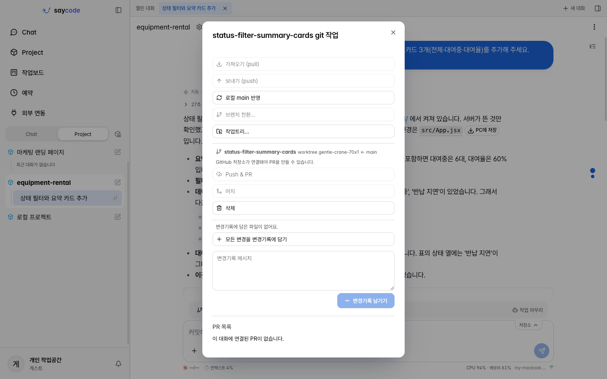
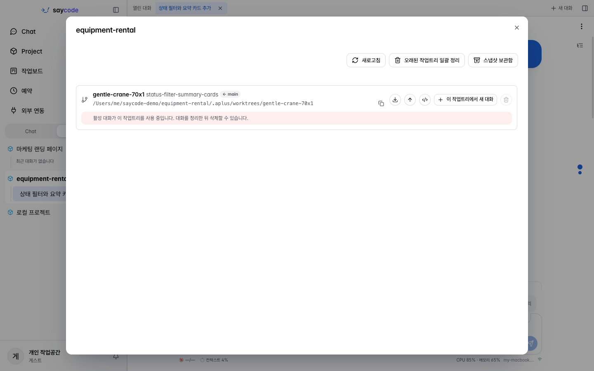
지운 작업트리 되살리기
- 작업트리 창에서 스냅샷 보관함을 엽니다.
- 되살릴 줄의 복원을 누릅니다. 원래 경로에 작업트리가 다시 생기고 커밋하지 않은 변경까지 돌아옵니다.
참고
스냅샷은 만들 때 30일이 지난 것을 지우고 50개를 넘으면 오래된 것부터 지웁니다. Windows 작업PC에서는 아직 스냅샷을 만들지 않습니다. 앱 밖에서 만든 작업트리는 변경 가져오기(충돌 미리보기)로 가져옵니다.
11.7 파일 복원지점과 변경기록#
파일 복원지점 — Git이 없는 폴더나 작업트리를 쓰지 않는 대화에서도 AI가 바꾼 파일을 되돌릴 수 있습니다.
- 새 대화에서 ⋯(대화 추가 옵션) → 파일 복원지점을 켭니다(macOS·Linux 작업PC).
- 대화 중 입력창 위 오른쪽의 파일 복원지점을 눌러 펼칩니다.
- 되돌릴 시점의 미리보기를 눌러 파일별 비교를 보고, 이 미리보기의 파일 변경을 확인했습니다에 체크한 뒤 파일 상태 복원을 누릅니다.
변경기록 남기기 — 작업 마무리 메뉴의 변경기록 남기기, 또는 입력창 위 브랜치 이름 버튼 → 담은 파일이 없으면 모든 변경을 변경기록에 담기 → 변경기록 메시지 입력 → 변경기록 남기기를 누릅니다. 설정(개발 자동화)에서 AI 생성을 켜면 메시지를 AI가 써 주는 버튼이 나타납니다(자동으로 커밋하지는 않습니다).
12. 작업보드#
모든 프로젝트의 모든 대화를 칸반으로 펼쳐 놓고 여러 AI를 한 번에 지휘합니다. 대화가 여러 개 동시에 돌 때 "지금 내 답을 기다리는 것"부터 찾기에 좋습니다.
참고
조건: 개발자용 메뉴라 처음에는 숨겨져 있습니다. 프로필 메뉴 → 개발자 기능 설정 → 작업보드 메뉴 보이기를 켜면 사이드바에 작업보드가 나타납니다(단축키 ⌘⇧A는 켜지 않아도 동작). 가로 폭이 넓을수록(1720px 이상) 여섯 칸이 한 화면에 들어옵니다. 조직 정책이 오토파일럿을 끄면 "오토파일럿 사용 불가 · 조직 정책"이 보입니다.
12.1 칸의 의미#
| 칸 | 의미 |
|---|---|
| 입력 대기 | 질문·권한·계획 승인 응답이 필요한 대화 — 가장 먼저 볼 곳 |
| 응답 중 | 지금 일하는 중. 카드를 여기에 놓으면 지시를 보냅니다 |
| 대기 | 다음 지시를 기다리는 중 |
| 리뷰 중 | 카드를 놓으면 리뷰를 요청합니다(모델과 프롬프트가 채워진 확인 창이 열림) |
| 완료 | 카드를 놓으면 대화를 완료로 옮깁니다 |
| PR 병합됨 | PR이 머지되어 끝난 대화 |
카드에는 프로젝트·제목·AI·경과 시간·브랜치(작업트리) 이름이 보입니다. 카드 제목을 누르면 마지막 요청과 최신 응답을 미리 보고 대화로 이동할 수 있고, 오른쪽 위 검색창으로 제목·프롬프트를 거릅니다. 카드를 리뷰 중 칸으로 끌어 놓으면 리뷰 요청 보내기 창(모델·기본 문구)이 열립니다.
12.2 필터와 선행 작업#
- 필터를 눌러 작업PC, 자동화로 만든 대화 숨기기, PR 상태(PR 없음·PR 열림·PR 머지됨)를 고릅니다. 버튼이 필터 N개 적용으로 바뀌고, 옆 X로 모두 풉니다.
- 선행 작업: 뒤에 할 카드를 눌러 상세를 열고 선행 작업 추가 → 먼저 끝나야 하는 카드를 고르고 추가합니다. 선행이 끝나기 전에 시작하려 하면 막힌 카드 이름을 알려 주고, 오토파일럿 카드는 선행이 끝나는 대로 지시를 자동 전송합니다. 카드에는
선행 1/2배지가 붙습니다.
12.3 카드의 도구#
| 버튼 | 하는 일 |
|---|---|
| Commit & PR (종이비행기) | 작업트리 카드에서 PR 작성을 요청합니다(작업 마무리의 PR 올리기와 같은 동작). |
| 오토파일럿 | AI 작업이 끝나면 리뷰하고, medium 이상 지적이 없고 요구사항마다 증거(테스트 결과·파일·커밋)가 있으면 Commit & PR까지 자동 진행합니다. 같은 장애가 3번 반복되면 멈추고 답을 기다립니다. 옆 화살표의 독립 리뷰로 실행도 선택할 수 있습니다. 작업트리 카드에서만 쓸 수 있으며 응답을 중단하면 꺼집니다. |
| PR 지킴이 | PR이 열린 카드에서 CI 실패·리뷰 봇 수정·충돌을 대신 지시하고 머지 가능해지면 알립니다(머지는 하지 않음). [로그인] gh 로그인 필요 |
| 변경 검증 | 그 대화의 작업트리(없으면 프로젝트 폴더)에서 빌드·테스트·구동 레시피를 실행합니다. package.json 스크립트·Makefile·.aplus/verify.json 중 하나가 있어야 합니다. |
팁
맨 위에 "대화 N개가 같은 권한을 기다려요" 카드가 보이면 전부 허용 (N) 또는 전부 거절로 한 번에 처리할 수 있습니다(14.2).
참고
보관&완료한 대화는 완료 칸에 카드로 남고, 카드의 완료 해제로 다시 이어 갈 수 있습니다(설정의 대화 보관함에서 복원해도 됩니다). PR이 병합된 대화는 PR 병합됨 칸으로 옮겨집니다. 개인 사용(로컬)에서도 보드·필터·선행 작업을 쓸 수 있으며, PR 지킴이는 GitHub 연결이 필요합니다.
13. 예약#
정해진 시간마다 AI에게 일을 맡깁니다. 예: "매일 오전 9시에 어제 PR을 요약해서 알려줘".
참고
조건: 사이드바 예약 메뉴는 모든 사용자에게 보이지만, [로그인] 예약을 만들고 관리하려면 클라우드 계정으로 로그인해야 합니다. 예약 시각에는 실행 PC가 켜져 있고 AI가 연결되어 있어야 하며, 서버·CLI가 지원하는 버전이어야 합니다. 조직이 예약을 끄면 예약 화면에 "조직 정책으로 예약을 쓸 수 없어요"가 표시됩니다.
개인 사용에서는 예약 화면에 "클라우드 계정으로 로그인하면 Chat 예약을 관리할 수 있습니다." 안내만 나옵니다. 아래 설명은 로그인한 계정 기준입니다.
13.1 새 예약 만들기#
- 사이드바 예약을 누르고 새 예약을 누릅니다. 예약이 하나도 없으면 예시 버튼으로 시작할 수도 있습니다.
- 할 일에 AI가 할 일을 적습니다.
- 반복을 고릅니다.
- 매일 — 정해진 시각에 실행합니다.
- 매주 — 요일 버튼을 하나 이상 고르고 시각을 정합니다.
- 한 번 — 날짜와 시각을 정합니다(지난 시각은 저장 불가).
- 시간 간격 방식은 예약하고 시작을 눌러 첫 실행을 요청하고 같은 간격으로 반복합니다(15분 이상).
- 시각 옆에 표시된 시간대를 확인합니다. 예:
매일 09:00 · 대한민국 시간과 그 아래내 시간(대한민국 시간)으로 다음 실행: …. 시간대는 고급 → 시간대에서 바꿉니다. - 예약하기를 누릅니다.
13.2 고급 설정#
고급을 펼치면 다음을 바꿀 수 있습니다.
- 이름, 연결할 대화, 실행할 PC, 사용할 AI (새 Chat은 마지막으로 선택한 AI·모델을 사용)
- 결과 보내기 — 예약이 끝나면 답변 앞부분(최대 1,500자)을 페어링한 Telegram·Slack 개인 대화로 보냅니다.
- 실패 알림 — 실패 이유 한 줄을 같은 곳 또는 다른 대화로 받습니다. 둘 다 처음에는 보내지 않음입니다.
- 코드 작업 추가 — Node.js 스크립트를 예약으로 실행합니다.
참고
메신저 전달은 [로그인] 메신저 채널이 연결된 계정에서 가능하고(16.3) Discord는 아직 선택할 수 없습니다. 같은 이유로 계속 실패하면 하루에 한 번만 알립니다.
13.3 예약 확인과 관리#
- 예약 결과는 일반 대화로 쌓이고 알림 카드에 요약됩니다. 승인 대기가 만료되면 만료 표시가 붙습니다.
- 대화 상단의 요청·일정 버튼, 또는 대화 ⋮ → 예약 작업에서 예약 내용(요청 전문·주기·상태·PC)을 봅니다. 예약 행의 더보기에서 실행 이력 · 편집 · 일시정지 · 삭제를 고릅니다.
- 시각이 지난 한 번 예약은 다시 켜기로 새 시각에 다시 실행합니다. PC가 꺼져 있어 놓친 한 번 예약은 나중에 실행되지 않습니다.
- 말로도 관리됩니다. Chat에서 "15분마다 접속 상태를 확인해줘", "이 예약 그만해", *"이 예약 다시 시작해"*라고 말하세요(간격은 최소 15분).
팁
모든 예약을 한꺼번에 잠시 멈추려면 내 설정 → 일반 → 보안 → 자동 작업 일시정지를 켜세요(14.6).
14. 권한·승인·보안#
AI가 컴퓨터에서 위험한 일을 하기 전에 내가 허락하고, 필요하면 규칙으로 미리 정해 둘 수 있습니다. 이 장은 승인 카드부터 보안 설정까지 순서대로 설명합니다.
14.1 데이터는 어디에 저장되나요?#
개인 사용에서는 대화·프로젝트·결과물이 모두 이 PC에만 저장되고(AI 응답은 연결한 AI 서비스와 주고받습니다), 로그인하면 계정(조직)에 저장되며 신뢰 기기에서만 암호화 데이터를 열 수 있습니다. 앱 안 브라우저의 로그인·쿠키는 로그아웃하거나 계정·조직을 바꾸면 지워집니다.
14.2 승인 카드 다루기#
AI가 명령 실행·파일 쓰기·네트워크·MCP 도구를 쓰려 할 때 대화에 승인 카드가 나타납니다.
- 카드의 내용을 확인하고 허용 또는 거절을 누릅니다. 카드에 이 대화에서 허용이 있으면 그 대화에서만 허용됩니다. 단축키는 Enter(허용) / Esc(거절) 입니다. (내 설정 → 일반 → 단축키 → 권한 요청에 Enter·Esc로 응답 스위치로 끌 수 있습니다.)
- 삭제·관리자 권한·원격 코드 실행·강제 push·비밀번호 파일 접근처럼 위험할 수 있으면 카드에 주의가 필요한 작업과 이유가 붙습니다. 이런 카드는 Enter로 바로 허용되지 않고 허용 버튼이 위험할 수 있어요 — 그래도 허용으로 바뀌어, 한 번 더 눌러야 합니다.
- 거절 이유를 AI에게 전하려면 버튼 아래 이유를 적고 거절을 펼쳐 이유를 쓰고 이유와 함께 거절을 누릅니다(Claude 대화). 빈 칸이면 그냥 거절입니다.
- 대화 여러 개가 똑같은 권한을 기다리면 알림 센터나 작업보드 맨 위에 "대화 N개가 같은 권한을 기다려요" 카드로 묶입니다. 요청 내용을 펼쳐 확인하고 전부 허용 (N) 또는 전부 거절을 누르세요. 개별 확인은 개별 보기입니다.
참고
질문·계획 승인·폴더 접근 요청, 위험 규칙에 걸린 요청은 묶이지 않고 해당 대화에서 하나씩 답합니다.
14.3 알림과 플로팅 승인 패널#
내 설정 → 일반 → 알림에서 정합니다. 아래 표는 화면 위에서 아래 순서이며, 아래쪽 항목은 스크롤해야 보입니다.
| 항목 | 설명 |
|---|---|
| 알림 표시 | 데스크톱 알림을 항상 / 앱을 보고 있지 않을 때만 / 끄기 중에서 고릅니다. 지금 화면에 보이는 대화는 알림을 띄우지 않습니다. macOS 알림에서는 허용 / 이번 세션 허용 / 거절로 바로 답하고, 완료 알림에는 답장할 수 있습니다. |
| 모바일 완료 푸시 | 작업이 끝나면 휴대폰으로 푸시를 받습니다(17장). |
| 알림 소리 | 입력 요청 소리 / 작업 완료 소리 / 알림 소리 전체 끄기 (현재 macOS에서만 소리가 납니다). |
| 플로팅 승인 패널 | 켜면 기다리는 승인·질문이 오른쪽 위 작은 패널에 카드로 모입니다(드래그로 이동). 지금 쓰는 앱의 포커스를 가져가지 않고 바로 허용·거절하거나 답할 수 있습니다. 기본은 꺼짐입니다. |
| 컴퓨터 사용 표시 | AI가 이 컴퓨터의 화면·입력을 조작하는 동안 화면 가장자리 테두리와 안내를 띄웁니다. 조작 중 Esc를 누르면 바로 멈춥니다. |
| 종료할 때 확인 | 응답 중인 대화·예약 작업·준비 중인 작업트리가 있으면 종료 전에 알려 줍니다(종료 / 취소 / 다시 묻지 않기). |
14.4 AI 도구 사용 규칙#
내 설정 → 일반 → 보안 → AI 도구 사용 규칙에서 AI가 컴퓨터 화면을 조작하거나 MCP 도구를 쓰기 직전의 규칙을 미리 정합니다.
- 쓰기 도구도 실행 전에 묻기 스위치를 켜면 만들기·수정 같은 쓰기 MCP 도구도 확인을 받습니다.
- 내가 정한 앱에 앱 식별자(macOS 번들 ID 또는 Windows 실행 파일 이름)를 넣고 묻기 · 차단 · 허용 중 하나를 골라 추가합니다.
- MCP 도구에서 열려 있는 대화가 받은 서버마다 기본값 · 묻기 · 차단 · 허용을 고릅니다. 이름에 보내기·삭제·결제가 들어간 도구는
(항상 확인)으로 표시됩니다. - 대화에서 허용한 앱·도구는 대화가 끝나거나 30분이 지나면 다시 확인하며, 이 창의 이 대화에서 허용한 앱·도구에서 미리 거둘 수도 있습니다.
참고
이 PC가 작업PC로 연결되어 있어야 저장할 수 있고, 규칙은 다음 도구 호출부터 적용됩니다. 허용으로 정해도 삭제·결제 같은 위험 동작은 매번 확인합니다.
14.5 AI 심사로 권한 요청 처리#
승인 카드를 일일이 누르기 번거롭다면 내 설정 → 개발 → 개발 자동화 → AI 심사로 권한 요청 처리를 켜 보세요. 저비용 AI가 프로젝트 지침에 비춰 허용·거절하고 판단하지 못한 요청만 사람에게 넘깁니다(판정은 대화에 한 줄로 남습니다).
- 기본은 꺼짐이며 내가 만든 Claude·Codex 프로젝트 대화에만 적용됩니다.
- 루트 삭제·sudo·강제 push·자격증명 파일 같은 고위험 요청, 심사 실패·1분 초과는 자동으로 허용하지 않고 직접 확인합니다.
- 거절된 요청을 한 번만 다시 허용하려면 그 대화에서
/approve를 보내고 한 번 허용을 누릅니다.
같은 개발 자동화 화면에서 같은 일을 반복하면 세션 자동 중지, 응답을 중단하면 자식 대화도 중단, 절전·재시작으로 끊긴 작업을 자동으로 이어가기, 오토파일럿 및 품질 검토(오토파일럿 독립 리뷰 AI, 자율 품질 게이트), 세션 이벤트 웹훅 등도 정합니다.
14.6 자동 작업 일시정지와 조직 정책#
내 설정 → 일반 → 보안에는 다음이 있습니다.
- 자동 작업 일시정지 — 켜면 예약 작업·GitHub 자동 실행·작업보드의 다음 단계가 시작되지 않습니다. 끄면 이어서 진행되며, 이미 진행 중인 대화는 중단되지 않습니다. 개인 사용에서도 쓸 수 있습니다.
- 조직 정책 [조직] — 로그인한 조직 계정에서만 보입니다. 조직 관리자가 정한 제한(허용 모델, 도구 규칙, 오토파일럿 끄기 등)을 확인합니다. 여기서는 바꿀 수 없고 소유자·관리자는 웹 관리 콘솔에서 바꿉니다.
- 신뢰 기기 [로그인] — 로그인 계정에서만 보입니다. 암호화 데이터를 열 수 있는 기기 목록. 모르는 기기는 신뢰 기기 폐기로 지웁니다.
- 익명 사용 통계 보내기, 비밀번호, 로그인 정보 저장 방식도 이 탭에 있습니다.
15. 메모리·교훈·시스템 프롬프트#
AI가 내 방식을 기억하고, 프로젝트에서 얻은 방법을 교훈으로 쌓고, 항상 따를 기본 지시를 정합니다.
15.1 시스템 프롬프트 — 항상 따를 기본 지시#
내 설정 → 일반 → 시스템 프롬프트에서 설정합니다.
- 지시문 칸에 AI가 항상 따를 지시를 적고 저장을 누릅니다. 저장하지 않고 닫으면 계속 편집할지, 변경을 버릴지 묻습니다.
- TypeScript로 작성, 한국어 같은 프리셋은 누르는 즉시 저장됩니다(작성 중인 지시문이 있으면 적용 전에 확인).
- 아래 Saycode 기본 지시 스위치(기본 행동 지시 사용)로 Saycode가 제공하는 기본 지시를 통째로 켜고 끕니다. 세부 설정을 펼치면 항목별로 고를 수 있습니다 — 자식 AI도구 호출, 내부 작업 위임, 결과물 인라인 미리보기, Saycode 사용 안내, 브라우저·컴퓨터 사용 확인, 기획부터 시작 워크플로우, 커밋 크레딧 등.
팁
Saycode 사용 안내를 켜 두면 "이 기능 어디서 켜?" 같은 사용법 질문에 AI가 앱 안내로 답하고 설정 화면 링크를 줍니다. 다음 단계 카드(6.8)도 이 기본 지시가 켜져 있어야 나옵니다.
15.2 내 채팅 개인화#
[로그인] 내 설정 → 일반 → 내 채팅 개인화에서 내 채팅에서 이 정보 사용을 켜고 AI가 알아 두면 좋을 나에 대한 정보(직무, 선호하는 말투 등)를 적어 저장합니다. Chat에서만 쓰이고 프로젝트 대화에는 쓰이지 않습니다.
15.3 교훈 — 프로젝트에서 얻은 방법 쌓기#
AI가 작업하다 확인한 방법(예: "이 프로젝트는 테스트를 이 명령으로 돌린다")을 교훈 후보로 제안하면, 그 답변 아래에 교훈 승인 카드가 나타납니다.
- 카드의 제안 내용을 읽습니다.
- 승인하면 그 교훈이 이후 같은 프로젝트의 대화에서 쓰입니다. 거절하면 버려집니다.
- 이미 있는 교훈을 고쳐 쓰자는 제안은 카드에 기존 교훈 갱신으로 표시되고 지금 교훈과 제안 내용이 나란히 보입니다. 비교한 뒤 승인하면 같은 자리에서 새 내용으로 바뀌고 이력은 남습니다.
교훈과 후보 목록은 프로젝트 도구(⋮) → 프로젝트 메모리에서 한 번에 봅니다.
15.4 메모리 설정#
내 설정 → 개발 → 메모리에서 AI의 기억을 관리합니다.
- 새 대화에서 유사 과거 대화 제안 — 새 대화를 시작할 때 비슷한 과거 대화를 제안합니다(앱 전체 설정).
- 대상 프로젝트를 고르면 그 프로젝트의 메모리 설치 상태와 대시보드를 관리합니다.
- 기억 보호 규칙 — 기억하지 말아야 할 항목을 새 금지 항목 칸에 적고 추가합니다.
- 메모리 기록 및 검색에서 남은 기억을 찾아 삭제합니다. 지운 직후 알림의 되돌리기를 10초 안에 누르면 취소됩니다.
- MongoDB 메모리 동기화는 회사 MongoDB를 쓰는 조직용 선택 기능입니다.
16. 외부 연동·확장·메신저 채널#
Notion·Slack 같은 서비스와 연결하고, 필요한 기능을 확장으로 설치하고, 메신저에서 Saycode에게 일을 맡깁니다.
16.1 외부 연동 화면#
사이드바 외부 연동을 누릅니다. 화면은 로그인 여부에 따라 다릅니다.
<img src="assets/integrations.png" alt="외부 연동(개인 사용) — 설치된 확장이 없는 확장 설치·관리 화면과 설치 가능한 확장 목록(화면 제목은 "연동"으로 표시됩니다)" />
| 상태 | 보이는 것 |
|---|---|
| 개인 사용 | 확장 설치·관리 화면(채널 어댑터, 플러그인 관리자 등) |
| [로그인] 로그인 | 서비스 목록(Notion · Slack · Google Drive · Gmail · KNOI · Figma · DirectCloud)과 커스텀 커넥터(+) |
[로그인] 서비스 연결: 목록에서 서비스 줄의 연결을 누르고, 열리는 브라우저에서 로그인해 허용합니다(KNOI는 API 키 입력). Google 서비스는 회사 계정으로만 연결됩니다. 연결한 서비스는 내 설정 → 일반 → 커넥터에서 연결 해제할 수 있습니다.
커스텀 커넥터 — OAuth를 지원하는 MCP 서버를 주소로 직접 연결합니다. +를 눌러 이름과 MCP 주소를 넣고 추가한 뒤 그 행의 연결을 누르세요. 조직 관리자가 등록한 MCP는 행의 로그인을 누릅니다(+ 버튼은 서버가 커스텀 커넥터를 켰을 때만 보입니다).
Figma 디자인 편집 — AI가 Figma에서 프레임과 화면을 직접 만들고 고치게 합니다. 외부 연동 → Figma 줄에서 이 컴퓨터의 상태를 확인하고 연결을 누른 뒤, 작업PC와 AI(Claude Code 또는 Codex)별로 연결하기를 누르고 브라우저에서 허용하세요. 상태가 사용 가능으로 바뀌면 새 대화에서 Figma 작업을 요청합니다.
16.2 확장 설치하기#
확장은 필요한 기능만 골라 설치하는 부가 기능입니다. 내 설정 → 개발 → 확장에서 관리합니다.
- 설치 가능한 확장 목록에서 목적을 확인하고 원하는 확장의 설치를 누릅니다.
- 활성화를 누릅니다. (설치만으로는 동작하지 않습니다.)
- 요청 권한(예:
channels.receive,sessions.control)이 보이면 하나씩 확인하고 권한 승인 및 활성화를 누릅니다. - 지우려면 제거를 누르고 확인에서 한 번 더 누릅니다. 상태는 비활성화됨 · 활성화됨 · 실행 중 · 격리됨 배지로 보입니다.
공식 확장 예: Telegram·Slack·Discord 채널 어댑터(메신저에서 Saycode 사용), 플러그인 관리자(스킬·플러그인 관리), Moai 작업 보드(작업 패널 ⋮ → Moai, macOS Apple Silicon·Linux x64), 미디어 미리보기, React Source Locator(브라우저에서 고른 요소에 컴포넌트·소스 위치 부착, 9장), 공개 링크(확장 목록에서 설치하지 않아도 결과 파일 카드의 공개 링크 → 설치 진행으로 바로 설치됩니다).
내려받은 확장 파일은 로컬 설치 및 개발 → 로컬 파일 설치로 설치합니다.
16.3 메신저 채널#
[로그인] Slack·Telegram·Discord를 연결해 메신저에서 Saycode에게 일을 맡기고 진행 상황을 받습니다. 로그인한 계정에서만 보입니다.
- 내 설정 → 일반 → 메신저 채널을 엽니다.
- Slack 연결 / Telegram 연결 / Discord 연결 중 쓰려는 칸을 찾습니다. "기능이 꺼져 있다"는 안내가 보이면 먼저 설치하고 켜기를 누릅니다.
- 칸의 안내 순서대로 봇을 만들고 토큰을 붙여 넣어 확인합니다(Slack은 4단계 안내와 Slack 앱 만들기 버튼이 있습니다).
- 메신저에서 Saycode 연결을 허용합니다.
- 첫 연결 때 어디서 실행할까요?가 나옵니다. 기본은 Desktop을 꺼도 응답하는 다른 작업PC로 옮겨 앱을 꺼도 수신이 유지되는 방식입니다.
- 연결마다 사용할 AI·모델과 응답 수준을 정하고, 메신저에서는
/settings,/stop같은 명령을 씁니다.
참고
메신저에서는 허용한 프로젝트·작업PC·작업만 제어할 수 있습니다. 예약 결과 전달에도 이 연결을 씁니다(13.2).
17. 작업PC와 모바일#
AI가 일하는 컴퓨터를 등록·관리하고, 휴대폰으로 같은 작업공간을 지켜봅니다.
17.1 작업PC#
이 컴퓨터는 첫 실행(시작준비)에서 자동으로 작업PC가 됩니다. GPU 서버·빌드 서버·클라우드 VM 같은 다른 컴퓨터도 등록하면, 코드와 데이터 옆에서 AI가 일하게 할 수 있습니다.
목록 보기 — 내 설정 → 개발 → 작업PC에서 내가 등록한 작업PC와 공용 PC로 나뉜 목록과 상태를 봅니다. 행을 눌러 상세를 열고 이름 변경·삭제, Saycode CLI 업데이트를 할 수 있습니다. 같은 이름의 PC는 구분되어 표시됩니다.
다른 컴퓨터 등록하기
- 내 설정 → 개발 → 작업PC → 작업PC 등록을 누릅니다.
- 작업PC 종류를 고릅니다. 로그인했다면 전용 작업PC나 공용 PC, 개인 사용 중이라면 개인입니다.
- 등록 코드 만들기를 누릅니다.
- 등록할 컴퓨터에 CLI를 설치하고 화면에 나온 명령을 그 컴퓨터에서 실행합니다.
- 몇 초 뒤 온라인으로 뜨면 완료입니다. 이제 프로젝트를 만들 때(작업PC 선택 창)나 프로필 메뉴 → 작업PC에서 그 PC를 고를 수 있습니다.
참고
로그인한 계정이라면 지금 쓰는 컴퓨터는 내 컴퓨터 등록 버튼으로 바로 등록합니다. 회사가 따로 운영하는 서버에서는 등록 코드 대신 새 PC에서 로그인 명령을 실행해 나온 연결 코드를 서버에서 승인합니다.
PC 공유 설정 [조직] — 조직 작업PC를 여럿이 쓰는 공용 PC로, 한 사람만 쓰는 전용 PC로 바꿉니다. 공용으로 바꾼 뒤 PC 사용 가능 사용자를 체크하고 저장합니다.
실행기 교대·재시작 — 작업PC 상세의 지금 교대로 실행기를 교체할 수 있고, 재시작 중에 보낸 요청은 끝난 뒤 자동으로 시작됩니다("재시작 준비 중"). [개발자] 입력창 아래의 CPU·메모리를 누르면 디스크·부하 같은 작업PC 상세도 볼 수 있습니다.
17.2 모바일 연결#
참고
조건: Saycode 공식 서버의 계정으로 로그인했거나 이 컴퓨터에서 개인 사용 중일 때 보입니다. 회사가 따로 운영하는 서버에서는 보이지 않습니다.
- 휴대폰에 Saycode 모바일 앱을 설치하고 로그인(또는 연결)합니다.
- 데스크톱에서 내 설정 → 일반 → 모바일 연결을 엽니다.
- 화면의 QR 코드를 휴대폰 앱으로 스캔합니다. 계정으로 로그인한 경우 QR이 만료되었다면 새 QR 만들기를 누른 뒤 다시 스캔하세요.
- 개인 사용에서는 접속 범위가 표시됩니다. 같은 네트워크에서는 바로 연결되고, 다른 네트워크에서는 링크 복사나 터널 버튼으로 연결합니다.
연결하면 같은 작업공간의 대화를 실시간으로 지켜보고, 긴 작업이 끝나는 순간 모바일 완료 푸시(내 설정 → 알림)를 받습니다.
18. 팀과 조직#
로그인하면 팀과 함께 쓰는 기능이 열립니다. 이 장은 로그인(또는 조직)이 필요한 기능을 한눈에 정리합니다. 로컬 작업공간만으로도 Chat, 프로젝트, 작업트리, 작업 마무리, 작업 영역은 모두 쓸 수 있습니다.
18.1 로그인이 필요한 기능#
| 기능 | 위치 | 설명 |
|---|---|---|
| 조직 시작과 전환 | 로그인 후 어느 조직에서 작업할까요?, 프로필 메뉴 → 조직 | 작업할 조직을 고르고 이 컴퓨터를 조직 작업PC로 등록합니다. |
| 조직 만들기·참여 | 작업공간 만들기, 초대 코드로 참여, 내 설정 → 일반 → 다른 조직 참여 | 받은 초대는 수락/거절, 이메일 초대 링크로도 참여합니다. |
| 조직 관리 | 프로필 메뉴 맨 위 | 소유자·관리자 전용 웹 관리 콘솔 — 멤버·팀·권한·모델 정책·감사 로그, 유저 초대, 보안 준비(2단계 인증, 복구 코드), 운영 → LLM 사용량·비용 → 사용 명세서(CSV/인쇄). |
| 프로젝트 공유·함께 작업 | 프로젝트 설정 → 프로젝트 공유, 함께 작업(그 밖에 MCP 서버, SSO 로그인, 환경 마운트) | 공개 범위·공유 팀 설정, 팀원 초대(프로젝트 소유자). 사이드바 목록은 전체 / 내 프로젝트 / 함께 작업 / 공유받은 프로젝트로 거릅니다. |
| 공용 PC·연동 기능 | PC 공유 설정, 커넥터·메신저 채널·공개 링크·예약, 사용 문의 | 13, 16장 참고 |
| 조직 AI 계정 | 시작준비 AI 단계, AI Models, AI 사용량 창 | 조직 Claude 계정 자동 선택·교체, 공용 PC 한도 시 다른 조직 계정으로 이어감, 개인 Claude 이어가기(이 컴퓨터에서 개인 Claude 계정 사용 허용) |
| 조직 정책 | 내 설정 → 일반 → 보안 | 관리자가 정한 제한을 확인합니다. 허용 모델만 선택 가능하고 정책에서도 AI 자동이 됩니다. |
| 종단간 암호화 | 시작준비, 보안 → 신뢰 기기, 암호화키 확인 | 대화를 암호화해 신뢰 기기에서만 열 수 있게 합니다. 복구 키는 안전하게 보관하세요. |
조직 관리 콘솔은 웹에서 열리며 멤버·팀·권한·모델 정책·감사 로그 메뉴로 구성됩니다.
팁
로그인한 뒤에도 이 컴퓨터에서 개인 사용 프로젝트를 병행하고 싶다면 프로필 메뉴 → 개발자 기능 설정 → standalone 모드 같이 사용하기를 켜세요. 프로필 메뉴에 이 컴퓨터에서 개인 사용이 생기고, 돌아올 때는 계정으로 돌아가기를 누릅니다.
참고
배포된 앱·리포트 URL을 여는 최종 이용자에게는 좌석이 필요 없습니다. 로컬 프로젝트는 로그인한 뒤에도 그대로 남습니다.
19. 단축키 모음#
⌘ 대신 Windows는 Ctrl을 씁니다. 모든 단축키는 내 설정 → 일반 → 단축키에서 검색하고 바꿀 수 있습니다. 동작 이름을 누르면 설명이 펼쳐지고, 오른쪽 키 버튼을 누른 뒤 새 조합을 누르면 바뀝니다(Esc로 취소, 바꾼 항목의 기본값으로 복원).
| 구분 | 동작 | 단축키 |
|---|---|---|
| 화면과 이동 | 내 설정 열기 / 사이드바 접기·펼치기 | ⌘, / ⌘B |
| 빠른 열기(단축키 화면 이름: 빠른 찾기) / 명령 찾아 실행(기능 찾아 실행) | ⌘P / ⌘⇧P | |
| 프로젝트 검색(사이드바) / 대화 검색(전체) | ⌘K / ⌘⇧F | |
| 대화 내 검색·터미널 찾기·diff 찾기 | ⌘F | |
| 작업보드 열기 / 확인이 필요한 대화로 이동 | ⌘⇧A / ⌘⇧J | |
| 새 창 | ⌘N | |
| 대화와 탭 | 새 대화(탭) / 탭 닫기 / 닫은 탭 다시 열기 | ⌘T / ⌘W / ⌘⇧T |
| 다음·이전 대화 탭 | Ctrl+Tab / Ctrl+Shift+Tab | |
| 목록의 이전·다음 대화 | ⌥⇧[ / ⌥⇧] | |
| 고정한 첫 아홉 대화로 이동 | ⌘1 ~ ⌘9 | |
| 보관·고정·숨기기 되돌리기 | ⌘Z | |
| 입력창과 AI | 파일·사진 추가 / 대기 요청 즉시 전송 | ⌘U / ⌘Enter |
| 빈 입력창에서 이전 요청 불러오기 / 프롬프트 검색(macOS) | ↑ / Ctrl+R | |
| 응답 중단 | ⌘. | |
| 다음 모델 / 다음 작업 강도 | ⌘⇧M / ⌘⇧E | |
| 권한 요청 허용·거절 / AI 질문 선택지 | Enter·Esc / 1 ~ 9 | |
| 작업 영역 | 작업 패널 접기·펼치기 / 터미널 열기 | ⌘⇧B / Ctrl+` |
| 오른쪽·아래에 새 대화 / 터미널 / 브라우저 | ⌘⌥C / ⌘⌥T / ⌘⌥B | |
| 파일 저장 | ⌘S |
20. 문제 해결과 FAQ#
20.1 대화 상태 읽는 법#
| 표시 | 뜻 |
|---|---|
| 도는 아이콘 / 응답 중 | AI가 지금 일하는 중입니다. 응답이 끝나도 백그라운드 작업이 돌면 아이콘이 남습니다. |
| 대기 | 다음 지시를 기다리는 중입니다. |
| 주황색 질문 아이콘 / 입력 대기 | 질문·권한 응답을 기다리는 중입니다. AI가 멈춘 게 아니라 여러분을 기다리는 중입니다. |
| 완료·보관됨 | 보관&완료로 정리된 대화입니다. 보관함에서 복원합니다. |
20.2 업데이트하기#
- 새 버전이 나오면 알림 카드에서 다운로드 진행률과 재시작이 보입니다. 프로필 메뉴 → 업데이트 확인 → 업데이트 내려받기 → 재시작해서 업데이트로 직접 해도 됩니다. 내 설정 → 일반 → 정보 → 업데이트 확인도 같습니다.
- 여러 버전이 밀렸다면 최신 버전으로 한 번에 설치합니다. 재시작 뒤 New Updated! 카드(영문 표시)의 Release notes에서 바뀐 내용을 앱 언어로 봅니다.
- 앱을 끌 때 응답 중인 대화나 예약 작업이 있으면 알려 줍니다(종료 / 취소).
20.3 도움 요청하기#
- 진단 정보 저장 — macOS 메뉴 막대 Help → 문제 해결 → 진단 정보 저장…, 또는 내 설정 → 일반 → 정보 → 문제 해결 → 진단 정보 저장…(Windows도 이 경로). 토큰·이메일·사용자 이름을 가린 zip이 저장됩니다. 보내기 전에 내용을 한 번 확인하세요. 버전 정보 복사로 앱·OS·데몬 버전을 복사할 수 있습니다.
- Help → 새 소식에서 릴리스 노트를 읽습니다.
- [로그인] 프로필 메뉴 → 사용 문의 / 개인 사용에서는 카카오톡 문의.
- 문의: saycode.ai · 기술 문의 ryan@buzzni.com
20.4 자주 묻는 질문#
Q. 대화를 시작하려는데 입력창이 비활성이고 안내만 나옵니다. A. 온라인 작업PC나 연결된 AI가 없다는 뜻입니다. 안내의 작업PC 설정 열기 / 내 AI 연결을 누르거나 시작준비를 다시 여세요. 작성 중인 글과 첨부는 그대로 보존됩니다.
Q. AI 연결이 안 됩니다 / 유료 AI 계정이 없어요. A. 내 설정 → 일반 → AI Models에서 연결하기로 Claude·ChatGPT를 연결하거나 무료 모델로 시작하기(Opencode)를 쓰세요(7.5). 무료 모델의 사용 한도는 20.5를 보세요. 로그아웃된 ChatGPT는 행의 … → 계정 풀에서 복원을 먼저 시도하세요.
Q. 작업보드·CPU·메모리 같은 메뉴가 안 보여요. A. 프로필 메뉴 → 개발자 기능 설정에서 해당 스위치를 켜야 합니다(3.4).
Q. 예약 만들기, 메신저 채널, 커넥터, 공개 링크 만들기가 안 돼요. A. 로그인이 필요한 기능입니다. 메뉴나 버튼은 보여도 개인 사용에서는 쓸 수 없으니 프로필 메뉴 → 로그인으로 로그인하세요(18장).
Q. 미리보기가 비어 있어요.
A. 프로젝트 설정 → 개발 → 실행에 개발 서버 명령·포트를 저장했는지 확인하세요. 없으면 AI에게 *"개발 서버를 켜두고 미리보기로 볼 수 있게"*라고 요청하거나 터미널에서 서버를 켠 뒤 브라우저에 http://localhost:<포트>를 입력하세요.
Q. 대화를 실수로 보관했어요. A. 보관 직후 10초 안에 되돌리기 또는 ⌘Z. 시간이 지났다면 내 설정 → 일반 → 대화 보관함에서 복원하세요.
Q. 답변이 중간에 끊겼어요. A. 끊긴 이유가 안내 줄에 나오고 이어서 하기(직접 중단했다면 다시 시도)를 누르면 이어집니다. 사용 한도에 걸렸다면 초기화 시각에 다시 시도하거나 다른 계정·AI로 이어가세요(7.4).
Q. 작업트리를 지웠어요 / 같은 일을 반복하다 AI가 멈췄어요 / 막힌 것 같아요. A. 지운 작업트리는 작업트리 창의 스냅샷 보관함 → 복원(11.6). 반복 감지로 멈췄다면(개발 자동화의 같은 일을 반복하면 세션 자동 중지) 요청을 더 작게 쪼개거나 독립 리뷰 요청…으로 다른 AI의 시각을 받아 보세요.
20.5 무료 모델로 얼마나 쓸 수 있나요?#
공식적으로 확인된 것: OpenCode Zen 문서(2026년 11월 1일 확인)는 무료 모델 대부분을 "기간 한정"으로 소개하며, 하루 토큰 수나 요청 횟수 같은 한도를 공개하지 않습니다. 무료 모델은 OpenCode를 통해서만 쓸 수 있고, 어떤 모델이 얼마나 오래 무료일지는 바뀔 수 있습니다.
참고치 (비공식): 사용자들이 GitHub 이슈(anomalyco/opencode#15585 등)에 남긴 관측은 대략 다음과 같습니다.
- 한도는 하루 단위이고 현지 시간 자정에 초기화되는 것으로 보입니다.
- 하루 사용량은 약 0.3달러어치(토큰으로 대략 30만~50만 개) 안팎이라는 추정이 많습니다.
- 짧은 시간에 몰아 보내면 분당 15~20회 안팎에서 잠시 제한되는 경우가 보고됩니다.
참고
위 숫자는 사용자 관측과 추정일 뿐입니다. OpenCode는 공식 한도를 공개하지 않았고 확인해 주지도 않았으며, 모델과 시기에 따라 언제든 바뀔 수 있습니다. 이 가이드가 보장하는 값이 아니니 계획의 근거로 삼지 마세요.
한도를 넘으면: 응답에 Free usage exceeded(무료 사용량 초과) 같은 안내가 나올 수 있습니다. Saycode는 무료 모델 한도에 걸리면 다른 무료 모델로 최대 3번까지 자동 전환하고, 유료 모델로는 절대 넘어가지 않습니다. 그래도 막히면 다음 중 하나를 고르세요.
- 초기화를 기다립니다. 다음 날 자정(현지 시간) 이후 다시 시도합니다.
- 다른 무료 모델로 바꿉니다. 입력창 아래 AI 메뉴에서 Opencode의 다른
무료모델을 직접 고릅니다(7.5). - 유료 AI를 연결합니다. 내 설정 → 일반 → AI Models → 연결하기에서 Claude나 ChatGPT를 연결하면 한도 걱정 없이 이어 갈 수 있습니다(2.2).
주의
회사·고객 코드나 기밀 자료는 제공사가 입력을 보관하지 않고 학습에도 쓰지 않는다고 밝힌 무료 모델만 쓰거나, 유료·조직 AI를 연결해 쓰세요. 모델별 정책은 OpenCode Zen 문서에서 확인합니다.
부록 A. 바뀐 용어표#
v0.1.50 전후 화면에 익숙한 분을 위한 대응표입니다. (영어 화면은 그대로인 항목이 많습니다.)
| 옛 이름 | 지금 이름 | 위치·비고 |
|---|---|---|
| 환경설정 | 내 설정 (일반 / 개발) | 프로필 메뉴 → 내 설정, ⌘, |
| 기획 시작(Build) | Build 탭 입력창 | 사이드바 Project → Build |
| Review 패널 | 변경 | 작업 패널 추가 |
| Quick Open | 빠른 열기 | 단축키 화면에서는 "빠른 찾기" |
| 온보딩 체크리스트 | 시작준비 | 내 설정 → 일반 → 시작준비 |
| 머신 / 로컬 머신 | 작업PC | 내 설정 → 개발 → 작업PC |
| 공유·공용 머신 | 공용 PC | |
| 에이전트 / Agent | AI도구 | |
| Default (모델) | 자동 (AI 자동) | 입력창 아래 한 버튼 |
| AI 선택 + 모델 + 추론 강도 | 한 버튼 두 단계 메뉴 (AI → 모델 / 작업 강도) | 입력창 아래 줄 |
대화 헤더 AI 잔량 칩 (✱ 71%/17%…) |
입력창 아래 AI 잔여량 버튼 → AI 사용량 창 | "AI 잔여량 보이기" 스위치는 사라지고 항상 표시 |
| AI 연결 설정 | AI Models | 내 설정 → 일반 |
| Saycode 홈 · 홈의 Chat/Build/Develop 탭 | 사이드바 Chat / Project(안의 Build / Develop) | |
| 새 프로젝트 / 기존 폴더 열기 / Git URL에서 복제 / ZIP으로 가져오기 | 프로젝트 만들기 창의 새 프로젝트 / Git 저장소 / ZIP·파일 / 기존 폴더 탭 | Develop 카드는 코드 저장소 가져오기 / Zip/파일 가져오기 / 머신 폴더 사용하기 |
| 계정 영역 · ⋯ 메뉴 · 테마(라이트·다크·자동) | 프로필 메뉴 · 다크 모드 스위치 | AI 잔여량·CPU 표시 스위치는 개발자 기능 설정으로 |
| 작업 보드 | 작업보드 (기본 숨김) | 개발자 기능 설정 → 작업보드 메뉴 보이기 |
| 작업 마무리 허브 창 | 입력창 위 줄 작업 마무리 메뉴 | |
| 현재 에이전트로 점검 / 셀프 리뷰 | 작업 리뷰하기 | 반복 횟수는 고급 설정… |
| 독립 리뷰어에게 맡기기 | 독립 리뷰 요청… | 리뷰 기록 탭 |
| Commit & PR | PR 올리기 | 작업보드 카드·오토파일럿 쪽 표기는 Commit & PR 그대로 |
| 완료 처리 / 완료로 이동 | 보관&완료 | |
| 보관된 대화 | 대화 보관함 | 내 설정 → 일반 → 대화 보관함 |
| 세션 ID 복사 | 대화 ID 복사 | |
| 전역 일시정지 | 자동 작업 일시정지 | 내 설정 → 일반 → 보안 |
| 자주 쓰는 프롬프트 / Quick Commands (핀 아이콘) | 내 프롬프트 (책갈피 아이콘, 입력 저장) | |
| 작업 사본 (worktree) | 작업트리 (새 대화 체크박스는 워크트리) | |
| 파일 체크포인트 보호 | 파일 복원지점 | 새 대화 ⋯ 메뉴 |
| 커밋 | 변경기록 | 변경기록 남기기 |
| 산출물 | 작업물 | 작업물 모아보기 |
| 요소를 선택해 채팅으로 보내기 | 요소를 골라 주석 트레이에 담기 → 모두 보내기 | Shift+클릭은 즉시 전송 |
| 헤더 ⋯ 다른 에이전트로 이어가기 | 프로젝트 도구 → 대화 이어가기 → 다른 AI도구로 이어가기 | |
| 어떻게 사용하시겠어요? 개인 사용 / 조직 사용 | 시작 화면의 개인 사용 / 로그인 | 조직 사용 = 로그인 |
| 머신 등록 | 작업PC 등록 |
부록 B. 메뉴·설정 지도#
본문에서 다루지 않은 메뉴·버튼 이름을 한곳에 모았습니다. 찾는 이름이 있을 때 사전처럼 쓰세요.
B.1~B.2 내 설정의 메뉴#
내 설정(프로필 메뉴 → 내 설정, ⌘,)의 왼쪽 메뉴입니다. [로그인] 표시가 있는 메뉴는 개인 사용에서는 보이지 않습니다.
B.1 일반 영역 메뉴#
| 묶음 | 메뉴 (자세한 설명) |
|---|---|
| 계정 | 시작준비(2장) · 프로필[로그인] (표시 이름, 소속 팀) · 대화 보관함(10장) · 모바일 연결(17장) · 보안(14장) · 다른 조직 참여[로그인] · 토큰 사용량[로그인] (개요·프로젝트별·모델별·출처별 사용량과 예상 비용) · 커넥터[로그인] · 메신저 채널[로그인] (16장) · 스킬[로그인] |
| 환경설정 | 알림(14장) · 시각 효과(다크 모드, 화면 효과 자동/전체 효과/효과 줄이기) · 언어 |
| AI | AI Models(7장, 무료 모델은 7.5) · 시스템 프롬프트·내 채팅 개인화(15장) · 대화 검색(10장) |
| 데스크톱 앱 | 단축키(19장) · 네트워크 데이터 절약(테더링·종량제에서 백그라운드 데이터 줄이기) · 정보(버전, 업데이트 확인, 문제 해결, 20장) |
B.2 개발 영역 메뉴#
| 메뉴 | 설명 |
|---|---|
| 작업PC | 작업PC 목록·등록·공유(17장) |
| 확장 | 공식 확장 설치·활성화, 로컬 파일 설치(16장) |
| 터미널 | 앱 안 터미널 글꼴·글자 크기, 입력 미리 표시 |
| 개발 자동화 | 오토파일럿·AI 심사·반복 감지 자동 중지 등(11·12·14장) |
| 환경 변수[로그인] · 저장소[로그인] | 환경 변수·비밀 값, GitHub·GitLab 계정 연결 |
| 메모리 | AI의 기억 관리, 기억 보호 규칙(15장) |
| 개발자 기능 설정 | 숨겨진 기능 스위치(3.4) |
B.3 입력창 아래 줄과 위 줄#
| 요소 | 설명 |
|---|---|
AI 자동 (또는 Claude Code · 자동처럼 고른 AI·모델 버튼) |
AI·모델·작업 강도를 한 버튼에서 고릅니다. 새 대화의 기본은 AI 자동입니다 → 7장 |
AI 잔여량 (서비스별 남은 비율, 예: 86%/72%) |
누르면 계정별 남은 사용량 창이 열립니다 → 7.4 |
컨텍스트 N% |
Claude 대화가 컨텍스트 창을 얼마나 채웠는지. 80% 이상이면 새 대화나 /compact를 권합니다. |
| CPU·메모리 [개발자] | 작업PC 상태 요약(개발자 기능 설정에서 켬) |
| 작업PC 이름 | 이 대화가 실행되는 컴퓨터와 연결 상태 |
| 요소 | 설명 |
|---|---|
| 저장소 | 입력창 위 오른쪽의 작은 저장소 버튼이 브랜치·워크트리 같은 저장소 도구 줄을 접고 펼칩니다. 원격 저장소가 없으면 브랜치 이름 옆에 저장소 연결하기가 나옵니다. |
| 워크트리 체크박스(줄 오른쪽) | 새 대화에서 켜면 이 대화만의 작업트리(복사본 작업 폴더)에서 일합니다. 옆 방식 버튼에서 새로 만들기 / 기존 항목 사용 / PR에서 시작 / 이슈에서 시작을 고르고, Base 버튼으로 기준 브랜치를 정합니다. |
| 지금 변경사항 가져가기 | 방식이 새로 만들기일 때, 프로젝트 폴더의 커밋하지 않은 변경과 새 파일을 새 작업트리로 한 번 복사합니다. 원래 폴더는 그대로입니다. |
| 브랜치 이름 + PR 번호 칩 | 누르면 가져오기 (pull), 보내기 (push) 와 Git 상태를 봅니다. PR 번호 옆 배지로 열림·병합됨·닫힘, CI 실패를 확인합니다. |
| 목표 | /goal로 건 목표가 한 줄로 보이고 목표 바꾸기 / 목표 지우기를 쓸 수 있습니다. |
| 자식 AI도구 실행 중(서브 에이전트) | AI가 만든 자식 대화가 돌아가는 동안 작업 이름과 함께 표시됩니다. |
| 작업 마무리 | 대화를 시작한 뒤 줄 오른쪽 끝에 나타나는 로봇 아이콘 버튼 → 11장 |
참고
작업트리·지금 변경사항 가져가기는 Git 저장소 프로젝트에서만, 그리고 아직 보내지 않은 새 대화에서만 설정할 수 있습니다. 새 대화를 열 때 직전에 켰던 워크트리 체크가 그대로 켜져 있을 수 있으니 보내기 전에 확인하세요. Windows 작업PC에서는 스냅샷·변경 가져가기·대화 옮기기가 아직 지원되지 않습니다.
B.4 입력창의 + 메뉴와 ⋯ 메뉴#
+ (추가)
| 메뉴 | 하는 일 |
|---|---|
| 파일 또는 사진 추가 (⌘U) | 파일·사진을 첨부합니다. 입력창으로 끌어다 놓아도 됩니다. 이 기기에 총 1GiB까지 저장되고, 보내기 전 첨부는 대화를 옮기거나 앱을 다시 켜도 복원됩니다. |
| 폴더 추가 | 폴더를 통째로 첨부합니다. |
| 이번 요청에 브라우저 사용 [개발자] | AI 브라우저 메뉴 보이기를 켠 경우, 이번 요청에서 AI가 브라우저를 쓰게 합니다. |
⋯ (대화 추가 옵션)
| 메뉴 | 하는 일 |
|---|---|
| 프롬프트 검색 | 전에 보낸 요청과 첨부 경로를 검색해 입력창에 넣습니다. macOS에서는 Ctrl+R도 됩니다. |
| Auto Router | 모델 자동 지정이 켜져 있는지 보여 줍니다. 새 대화에서만 |
| 파일 복원지점 | AI가 파일을 바꿀 때마다 상태를 기록해 되돌릴 수 있게 합니다 (11.7). 새 대화에서만, macOS·Linux 작업PC, 동시작업과 함께 쓸 수 없음 |
| 프로젝트 허브로 설정 | 이 대화가 같은 프로젝트의 다른 대화들이 끝났다는 소식·질문을 모아 받는 허브가 됩니다(프로젝트마다 하나). 새 대화에서만 |
| 동시작업 | 같은 요청을 여러 대화로 동시에 시작해 결과를 비교합니다. 후보 수와 함께 돌릴 AI를 정합니다. Git 프로젝트 + 워크트리 새로 만들기 필요 |
더 궁금한 것이 있나요? saycode.ai · 기술 문의 ryan@buzzni.com
© 2026 Buzzni